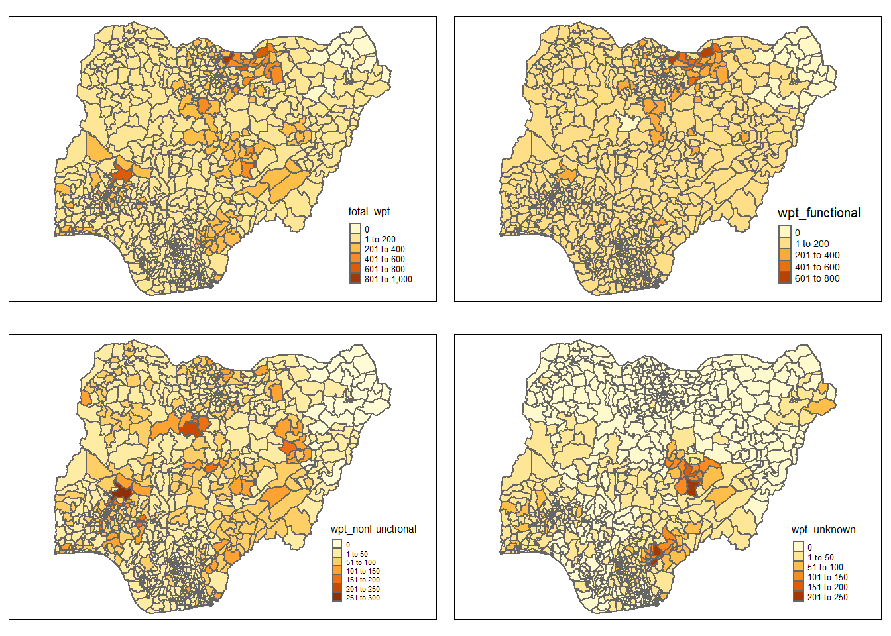
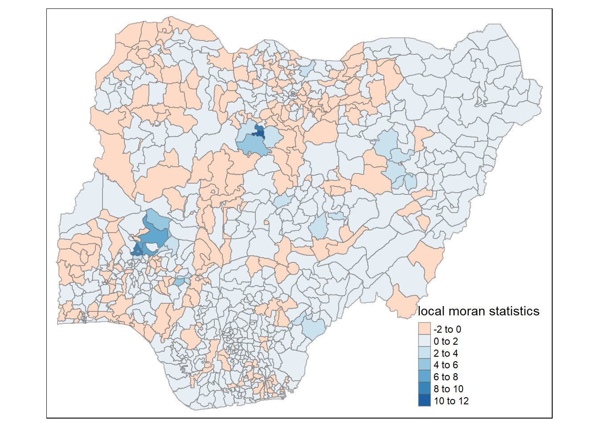
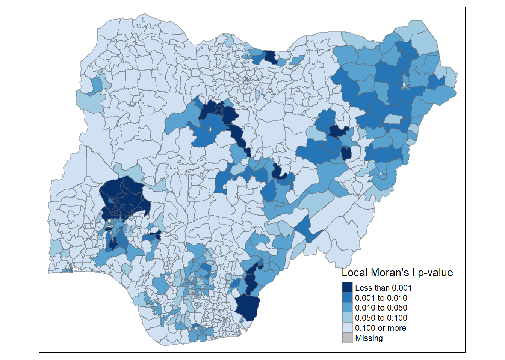
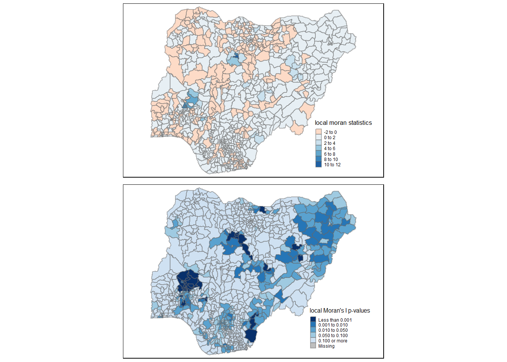
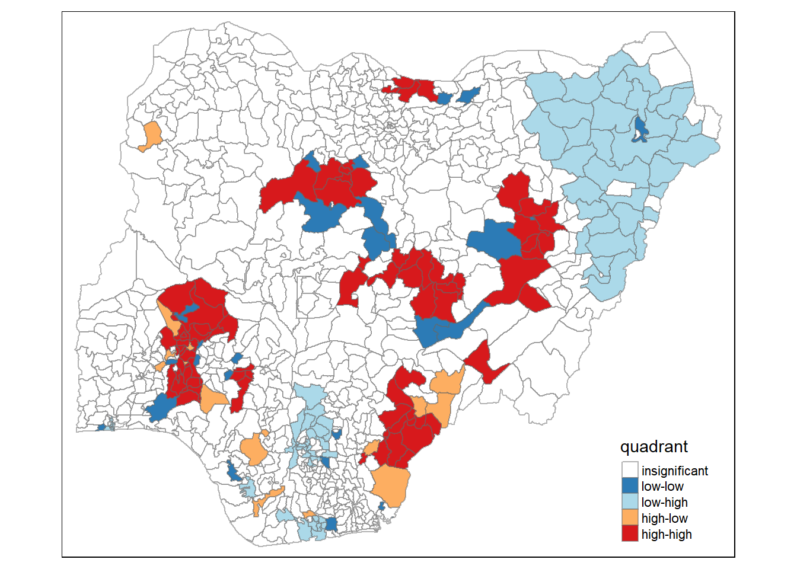
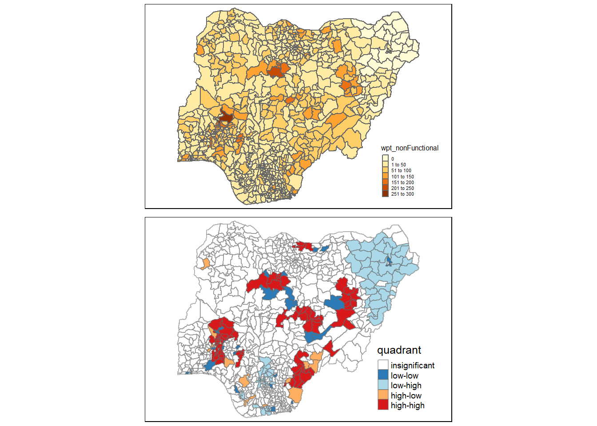

Show the code
pacman::p_load(sf, tidyverse, tmap, spdep, funModeling, janitor, maps)November 29, 2022
March 6, 2023
The main aim of this project is to use the water point related data from rural areas at the water point or small water scheme level available from the WPdx Data Repository to explore the applicable geospatial analysis tools in water resources management for Nigeria.
To address the issue of providing clean and sustainable water supply to the rural community.
Apply appropriate global and local measures of spatial Association techniques to reveals the spatial patterns of Not Functional water points.
Below are the list of tasks to be completed :
Import the shapefile into R and save it in a simple feature data frame format with appropriate sf method.
note : Nigeria (NGA) has 3 Projected Coordinate Systems, EPSG: 26391, 26392, and 26303.
Derive the proportion of functional and non-functional water point at LGA level with appropriate tidyr and dplyr methods,
Combine the geospatial and aspatial data frame into simple feature data frame.
Performe outliers / clusters analysis by using appropriate local measures of spatial association methods.
Perform hotspot areas analysis by using appropriate local measures of spatial association methods.
Plot 2 main types of maps below :
Thematic Mapping
Plot maps to show the spatial distribution of functional and non-functional water point rate at LGA level by using appropriate thematic mapping technique provided by tmap package.
Analytical Mapping
Plot hotspot areas and outliers / clusters maps of functional and non-functional water point rate at LGA level by using appropriate thematic mapping technique provided by tmap package.
Following are the packages require for this exercise :
pacman package : to install and load the following R packages into R environment.
sf package :
tidyverse package :
readr :
stringr :
tmap package :
qtm( ) - to plot quick thematic map.
tm_shape( ) - specify the shape object.
spdep package :
poly2nb( ) - compute contiguity weight matrices for the study area.
nb2listw( ) - supplements a neighbours list with spatial weights for the chosen coding scheme.
moran.test( ) - for spatial autocorrelation using a spatial weights matrix in weights list form.
moran.mc( ) - for permutation test with Moran’s I statistic.
geary.test( ) - for spatial autocorrelation using a spatial weights matrix in weights list form.
geary.mc( ) - for permutation test with Geary’s C statistic.
sp.correlogram( ) - spatial correlograms for Moran’s I and the autocorrelation coefficient.
localmoran( ) - to calculate local spatial statistics for each zone based on the spatial weights object used.
moran.plot( ) - plot of spatial data against its spatially lagged values.
knearneigh ( ) - return matrix with the indices of points belonging to the set of the k nearest neighbours of each other.
knn2nb( ) - convert knn object to a neighbours list of class nb.
nbdist( ) - return the length of neighbour relationship edges.
dnearneigh( ) - derive distance-based weight matrices.
localG( ) - calculate local spatial statistic G for each zone based on the spatial weights object used.
funModeling package :
janitor package :
Use the code chunk below.
Aspatial Data
Geospatial Data
Use the code chunk below.
Note :
st_read( ) to import geo_export data set.
#| eval: false to display the code chunks without the output.
Use the code chunk below.
Note :
st_geometry( ) to get the geometry summary of a class data.frame or sf object.
Use the code chunk below.
Note :
glimpse( ) to swtich columns to rows, features to columns.
Avoid performing transformation
if going to use st_intersects()
in geoprocessing stage. This is
because st_intersects() only
works correctly if the geospatial
data are in geographic coordinate
system (i.e. wgs84)Use the code chunk below.
Notes :
The output file is called “wp_nga.rds” and it is saved in geodata sub-folder.”
Use the code chunk below.
Notes :
Use the code chunk below.
Note :
st_geometry( ) to get the geometry summary of a class data.frame or sf object.
Use the code chunk below.
Note :
glimpse( ) to swtich columns to rows, features to columns.
Use the code chunk below.
Note :
glimpse( ) to recode all the NA values in status_cle field into Unknown.
Use the code chunk below.
Note :
get_dupes( ) to review rows that have duplicates. Specify the data.frame and the variable combination to search for duplicates and get back the duplicated rows.
Assumption :
For the same value of clean_adm2, each observation has unique pair of lat_deg and lon_deg.
Before proceed to analysis stage, sense the data with EDA.
Use the code chunk below.
Note :
freq( ) to display the distribution of status_cle field in wp_nga.
Remarks :
During the first round of EDA, noticed there are 2 values of “Non-functional due to dry season”.
Use mutate( ) with str_replace to combine both values, thereafter update the dataset.
Use the code chunk below.
Note :
filter( ) to get the data tables based on values associated with “Non-Functional” under “status_clean” variable.
According to the variables’ definition from the waterpointdata.org :
usage_cap (usage_capacity) = recommended maximum users per water point :
local_popu (local_population_1km) = number of people living within a 1km radius of the water point.
served_pop (water_point_population) = number of people currently or potentially served by a specific water point.
pressure (pressure_score) = the pressure score ( 0 - 100% ) is calculated based on the ratio of the number of people assigned to that water point over the theoretical maximum population which can be served based on the technology.
crucialness (crucialness_score) = the crucialness score ( 0 - 100% ) is the ratio is likely current users to the total local population within a 1km radius of the water point.
Remarks :
Use the code chunk below.
Note :
filter( ) to get water points that associated to the variation of “Non-Functional”.
Use the code chunk below.
Note :
filter( ) to get water points that associated to the variation of “Functional”.
Use the code chunk below.
Note :
filter( ) to get water points that associated to the variation of “Unknown”.
Use the code chunk below.
nga_wp <- nga %>%
mutate(`total_wpt` = lengths(
st_intersects(nga, wp_nga))) %>%
mutate(`wpt_functional` = lengths(
st_intersects(nga, wpt_functional))) %>%
mutate(`wpt_nonFunctional` = lengths(
st_intersects(nga, wpt_nonfunctional))) %>%
mutate(`wpt_unknown` = lengths(
st_intersects(nga, wpt_unknown)))Use the code chunk below.
Note :
mutate( ) to add “pct_functional” and “pct_non-functional”.
write_rds( ) to save the sf data table into rds format.
total <- qtm(nga_wp, "total_wpt") +
tm_layout(legend.height = 0.3, legend.width = 0.3)
wp_functional <- qtm(nga_wp, "wpt_functional") +
tm_layout(legend.height = 0.3, legend.width = 0.3)
wp_nonfunctional <- qtm(nga_wp, "wpt_nonFunctional") +
tm_layout(legend.height = 0.3, legend.width = 0.3)
unknown <- qtm(nga_wp, "wpt_unknown") + tm_layout(legend.height = 0.3, legend.width = 0.3)
tmap_arrange(total, wp_functional, wp_nonfunctional, unknown, asp=1.5, ncol=2)
Determine autocorrelation for non-functional water points data.
Compute Contiguity Weight Matrices (CWM) first before compute the Global Spatial Autocorrelation statistics.
Determine the adjacency with 2 methods, Queen and Rook methods and derive Wq and Wr from the methods respectively.
Use the code chunk below.
Note :
poly2nb( ) to return a list of first order neighbours based on Queen criteria.
Use the code chunk below.
Note :
poly2nb( ) to return a list of first order neighbours based on Queen criteria.
| Wq | Wr | |
|---|---|---|
| Number of regions without links | 1 link (#86) | 1 link (#86) |
| Number of regions with the most links | 14 links (#508) | 14 links (#508) |
| Number of regions with 1 link | #138, #560 | #138, #560 |
| Average number of links per region | 5.736 | 5.711 |
Both methods have relatively similar performance, only have 1 region without links.
Identify neighbours of region points by Euclidean distance with a distance band.
Use the code chunk below.
Note :
cbind( ) to combine both longitude and latitude
Use the code chunk below.
Note :
knn2nb( ) to convert knn objects that returned by knearneigh( ) into a neighbours list of class nb.
nbdist( ) to return the length of neighbour relationship edges.
unlist( ) to remove the list structure of the returned object.
Min. 1st Qu. Median Mean 3rd Qu. Max.
13.86 34.82 42.98 45.71 56.00 94.18 Remarks :
The largest first nearest neighbour distance is 39.085 km, using this as the upper threshold gives certainty that all units will have at least one neighbour.
Min. 1st Qu. Median Mean 3rd Qu. Max.
13.86 39.06 50.48 54.58 65.14 147.41 Min. 1st Qu. Median Mean 3rd Qu. Max.
13.86 41.11 52.45 59.26 72.44 192.60 Use the code chunk below.
Note :
dnearneigh( ) to derive distance-based weight matrices.
| Wd=3 | Wd=5 | Wd=6 | Wd=8 | |
|---|---|---|---|---|
| Largest first nearest neighbour distance | 39.08489 | 40.08029 | 42.28107 | 44.87575 |
Use the code chunk below.
Note :
nb2listw( ) to assign weights to each neighboring polygon. Each neighboring polygon will be assigned equal weight by explore with different input for style i.e. “W”, “B” and “C”.
Neighbour list object:
Number of regions: 774
Number of nonzero links: 4440
Percentage nonzero weights: 0.7411414
Average number of links: 5.736434
1 region with no links:
86[1] FALSECharacteristics of weights list object:
Neighbour list object:
Number of regions: 774
Number of nonzero links: 4440
Percentage nonzero weights: 0.7411414
Average number of links: 5.736434
1 region with no links:
86
Weights style: W
Weights constants summary:
n nn S0 S1 S2
W 773 597529 773 285.0658 3198.414[1] TRUECharacteristics of weights list object:
Neighbour list object:
Number of regions: 774
Number of nonzero links: 4440
Percentage nonzero weights: 0.7411414
Average number of links: 5.736434
1 region with no links:
86
Weights style: B
Weights constants summary:
n nn S0 S1 S2
B 773 597529 4440 8880 112368[1] TRUECharacteristics of weights list object:
Neighbour list object:
Number of regions: 774
Number of nonzero links: 4440
Percentage nonzero weights: 0.7411414
Average number of links: 5.736434
1 region with no links:
86
Weights style: C
Weights constants summary:
n nn S0 S1 S2
C 773 597529 773 269.1572 3405.93Regardless of which input for the style, all have the same result of 1 region without links while the average number of links is 5.736434.
Use the code chunk below.
Note :
moran.test( ) to calculates the Moran’s I Index value and both a a z-score and p-value to evaluate the significance of that Index.
moran.mc( ) to do a permutation test to evaluate the rank of the observed statistic in relation to the statistic of simulated values.
Moran I test under randomisation
data: nga_wp$wpt_nonFunctional
weights: ngaWp_rswmQW n reduced by no-neighbour observations
Moran I statistic standard deviate = 20.043, p-value < 2.2e-16
alternative hypothesis: greater
sample estimates:
Moran I statistic Expectation Variance
0.433932927 -0.001295337 0.000471516
Monte-Carlo simulation of Moran I
data: nga_wp$wpt_nonFunctional
weights: ngaWp_rswmQW
number of simulations + 1: 1000
statistic = 0.43393, observed rank = 1000, p-value = 0.001
alternative hypothesis: greaterRemarks :
The value for both actual and random Moran’s I almost the same, i.e. 0.43393, which means the non-functional water points are positively autocorrelated with the data spatially cluster.
There is a statistical significant with p-value (2.2e-16) < 0.001, smaller than the alpha value to support the rejection of null hypothesis for the test i.e. the non-functional water points are not randomly spatial.
Use the code chunk below.
Note :
hist( ) to examine the simulated Moran’s I test statistics by plotting the distribution of the statistical values as a histogram.
Geary C test under randomisation
data: nga_wp$wpt_nonFunctional
weights: ngaWp_rswmQW
Geary C statistic standard deviate = 14.457, p-value < 2.2e-16
alternative hypothesis: Expectation greater than statistic
sample estimates:
Geary C statistic Expectation Variance
0.6170907765 1.0000000000 0.0007014859
Monte-Carlo simulation of Geary C
data: nga_wp$wpt_nonFunctional
weights: ngaWp_rswmQW
number of simulations + 1: 1000
statistic = 0.61709, observed rank = 1, p-value = 0.001
alternative hypothesis: greaterRemarks :
The value for both actual and random Geary’s C almost the same, i.e. 0.61709, which means the non-functional water points are positively autocorrelated with the data spatially cluster.
There is a statistical significant with p-value (2.2e-16) < 0.001, smaller than the alpha value to support the rejection of null hypothesis for the test i.e. the non-functional water points are not randomly spatial.
The Geary’s C value is greater than the Moran’s I value. However, since both values are less than 1, the observations tend to be clustered and similar.
Use Local Indicators for Spatial Association (LISA) method, especially local Moran’s I to detect cluster and / or outlier.
Use the code chunk below.
Ii E.Ii Var.Ii Z.Ii Pr(z != E(Ii))
1 -0.32365786 -9.995243e-04 1.924638e-01 -0.73547576 0.46204980
2 0.07000542 -4.092463e-05 1.053077e-02 0.68258288 0.49487045
3 1.25819985 -1.627684e-03 4.181728e-01 1.94819847 0.05139122
4 -0.03537489 -5.427505e-05 5.954304e-03 -0.45773361 0.64714384
5 0.01201533 -2.590965e-04 3.988998e-02 0.06145673 0.95099547
6 0.00768085 -1.538445e-07 1.687859e-05 1.86960486 0.06153871Use the code chunk below.
Ii E.Ii Var.Ii Z.Ii Pr.z....E.Ii..
1 -3.2366e-01 -9.9952e-04 1.9246e-01 -7.3548e-01 4.6205e-01
2 7.0005e-02 -4.0925e-05 1.0531e-02 6.8258e-01 4.9487e-01
3 1.2582e+00 -1.6277e-03 4.1817e-01 1.9482e+00 5.1391e-02
4 -3.5375e-02 -5.4275e-05 5.9543e-03 -4.5773e-01 6.4714e-01
5 1.2015e-02 -2.5910e-04 3.9890e-02 6.1457e-02 9.5100e-01
6 7.6808e-03 -1.5384e-07 1.6879e-05 1.8696e+00 6.1539e-02
7 2.3716e-01 -6.6542e-04 8.5226e-02 8.1464e-01 4.1528e-01
8 1.3499e-01 -6.9507e-05 1.3396e-02 1.1669e+00 2.4326e-01
9 5.8469e-01 -3.9167e-04 6.0293e-02 2.3828e+00 1.7183e-02
10 1.9145e-01 -2.2881e-04 2.5098e-02 1.2099e+00 2.2630e-01
11 6.7485e-01 -7.6926e-04 8.4332e-02 2.3265e+00 1.9992e-02
12 1.3484e-01 -9.2780e-04 8.8869e-02 4.5543e-01 6.4880e-01
13 1.6286e-02 -4.0925e-05 6.3021e-03 2.0567e-01 8.3705e-01
14 -3.1655e-02 -2.9456e-05 2.8239e-03 -5.9514e-01 5.5175e-01
15 -3.1637e-01 -1.0254e-02 1.1135e+00 -2.9010e-01 7.7174e-01
16 6.8612e-02 -9.2780e-04 1.4275e-01 1.8406e-01 8.5397e-01
17 2.4270e-02 -1.9868e-05 5.1126e-03 3.3971e-01 7.3408e-01
18 5.8712e-01 -1.1792e-03 1.8138e-01 1.3814e+00 1.6717e-01
19 -8.6368e-03 -8.6620e-05 1.1101e-02 -8.1152e-02 9.3532e-01
20 -2.1125e-02 -1.8249e-05 2.8103e-03 -3.9815e-01 6.9052e-01
21 -6.1300e-02 -1.4475e-04 2.2288e-02 -4.0963e-01 6.8208e-01
22 2.8968e-01 -1.3297e-03 3.4172e-01 4.9782e-01 6.1861e-01
23 8.3857e-01 -1.1920e-03 1.8334e-01 1.9612e+00 4.9856e-02
24 1.5893e-03 -2.7477e-05 5.2960e-03 2.2217e-02 9.8228e-01
25 1.3175e-01 -8.6620e-05 9.5025e-03 1.3525e+00 1.7623e-01
26 8.0063e-01 -9.3914e-04 1.8085e-01 1.8849e+00 5.9446e-02
27 8.4077e-01 -1.6277e-03 2.5025e-01 1.6840e+00 9.2191e-02
28 -1.9940e-03 -1.2099e-02 1.3113e+00 8.8241e-03 9.9296e-01
29 3.0859e-01 -2.2324e-04 2.4486e-02 1.9735e+00 4.8442e-02
30 2.5468e-01 -3.1865e-04 3.0540e-02 1.4592e+00 1.4452e-01
31 9.3035e-03 -6.3380e-06 8.1230e-04 3.2665e-01 7.4393e-01
32 1.0902e+00 -1.5504e-03 3.9834e-01 1.7298e+00 8.3669e-02
33 8.0526e-02 -1.9868e-05 2.5464e-03 1.5962e+00 1.1045e-01
34 2.2617e-01 -2.7477e-05 3.0145e-03 4.1198e+00 3.7925e-05
35 -1.7370e-01 -3.5422e-04 3.8849e-02 -8.7950e-01 3.7913e-01
36 3.6215e+00 -1.7248e-02 1.6251e+00 2.8544e+00 4.3117e-03
37 -9.7994e-02 -6.9507e-05 4.8271e-03 -1.4094e+00 1.5870e-01
38 2.6132e+00 -5.7830e-03 6.3080e-01 3.2975e+00 9.7543e-04
39 1.8731e+00 -1.5753e-02 2.9886e+00 1.0926e+00 2.7457e-01
40 2.9695e+00 -3.9022e-03 7.4920e-01 3.4353e+00 5.9197e-04
41 4.0806e+00 -1.3638e-02 2.0716e+00 2.8446e+00 4.4471e-03
42 7.7463e-01 -8.2075e-03 1.5690e+00 6.2497e-01 5.3199e-01
43 7.5445e-01 -1.3297e-03 3.4172e-01 1.2929e+00 1.9605e-01
44 -9.4511e-02 -2.0041e-04 2.5680e-02 -5.8852e-01 5.5619e-01
45 -4.0892e-01 -1.0618e-03 2.7294e-01 -7.8067e-01 4.3500e-01
46 1.7264e-02 -1.8555e-06 3.5764e-04 9.1300e-01 3.6124e-01
47 -6.0666e-01 -4.4019e-03 6.7490e-01 -7.3309e-01 4.6350e-01
48 3.8136e-02 -1.0903e-05 2.1016e-03 8.3213e-01 4.0533e-01
49 -2.6481e-01 -9.2780e-04 1.0170e-01 -8.2749e-01 4.0796e-01
50 -3.6486e-01 -1.7389e-04 1.6668e-02 -2.8247e+00 4.7319e-03
51 6.4059e-01 -1.0618e-03 1.0169e-01 2.0122e+00 4.4203e-02
52 5.2295e-01 -6.1632e-04 7.8942e-02 1.8634e+00 6.2399e-02
53 5.1817e-01 -5.6910e-04 5.4530e-02 2.2214e+00 2.6324e-02
54 6.8852e-01 -7.1640e-04 7.8541e-02 2.4593e+00 1.3920e-02
55 7.4747e-01 -8.8063e-04 2.2641e-01 1.5727e+00 1.1578e-01
56 5.8669e-01 -1.6277e-03 2.5025e-01 1.1760e+00 2.3958e-01
57 9.1402e-01 -1.2599e-03 2.4254e-01 1.8585e+00 6.3096e-02
58 7.1930e-01 -1.3297e-03 1.4569e-01 1.8880e+00 5.9027e-02
59 -3.0961e-02 -5.2377e-04 8.0617e-02 -1.0720e-01 9.1463e-01
60 3.2899e-03 -3.3373e-07 3.6614e-05 5.4375e-01 5.8662e-01
61 7.1599e-02 -2.9126e-04 4.4841e-02 3.3949e-01 7.3424e-01
62 1.1170e+00 -1.6277e-03 2.0827e-01 2.4512e+00 1.4236e-02
63 5.9556e-01 -6.0715e-04 7.7767e-02 2.1378e+00 3.2531e-02
64 -7.0312e-02 -2.9456e-05 2.8239e-03 -1.3226e+00 1.8597e-01
65 4.0210e-02 -3.1865e-04 4.9056e-02 1.8298e-01 8.5481e-01
66 9.0458e-02 -1.1259e-03 1.4414e-01 2.4123e-01 8.0938e-01
67 6.6358e-02 -1.8555e-06 2.0357e-04 4.6511e+00 3.3019e-06
68 9.9615e-01 -1.1259e-03 4.3469e-01 1.5126e+00 1.3038e-01
69 9.5142e-01 -1.1259e-03 9.5720e-02 3.0788e+00 2.0782e-03
70 1.5763e+00 -2.3901e-03 3.6719e-01 2.6053e+00 9.1806e-03
71 1.3676e+00 -3.5471e-03 3.0082e-01 2.4999e+00 1.2422e-02
72 9.2471e-02 -1.4925e-04 1.4307e-02 7.7435e-01 4.3873e-01
73 -3.7128e-02 -8.3203e-05 1.0663e-02 -3.5875e-01 7.1978e-01
74 -3.1518e-02 -1.2649e-04 1.6210e-02 -2.4656e-01 8.0525e-01
75 -9.2317e-03 -1.9519e-04 2.1411e-02 -6.1757e-02 9.5076e-01
76 -3.8035e-02 -2.3951e-06 2.2963e-04 -2.5098e+00 1.2079e-02
77 7.1490e-01 -1.0618e-03 1.3594e-01 1.9419e+00 5.2155e-02
78 8.4336e-01 -1.6277e-03 1.7829e-01 2.0012e+00 4.5369e-02
79 7.2523e-01 -9.9952e-04 1.5377e-01 1.8520e+00 6.4030e-02
80 5.3888e-01 -4.8031e-04 7.3931e-02 1.9837e+00 4.7294e-02
81 3.4904e+00 -9.4838e-03 1.4466e+00 2.9099e+00 3.6157e-03
82 1.1262e+00 -3.3198e-03 8.5145e-01 1.2241e+00 2.2090e-01
83 -4.1318e-01 -3.9167e-04 7.5464e-02 -1.5026e+00 1.3293e-01
84 -1.6794e-01 -5.4275e-05 8.3578e-03 -1.8364e+00 6.6298e-02
85 -1.0457e-01 -3.8586e-05 4.2332e-03 -1.6066e+00 1.0814e-01
86 0.0000e+00 0.0000e+00 0.0000e+00 NaN NaN
87 9.7051e-02 -1.4925e-04 1.9126e-02 7.0284e-01 4.8215e-01
88 1.3239e-01 -1.1259e-03 1.4414e-01 3.5167e-01 7.2509e-01
89 8.6819e-01 -5.3489e-03 5.8371e-01 1.1434e+00 2.5289e-01
90 2.8316e-01 -1.6128e-03 1.3704e-01 7.6927e-01 4.4173e-01
91 1.2582e+00 -1.6277e-03 3.1322e-01 2.2510e+00 2.4382e-02
92 1.5674e+00 -3.2090e-03 4.0996e-01 2.4530e+00 1.4167e-02
93 1.5345e-02 -2.7477e-05 3.5215e-03 2.5904e-01 7.9560e-01
94 6.5838e-03 -9.8783e-04 9.4613e-02 2.4616e-02 9.8036e-01
95 7.6830e-02 -6.6449e-05 8.5158e-03 8.3329e-01 4.0468e-01
96 1.0339e-01 -8.3203e-05 9.1276e-03 1.0831e+00 2.7876e-01
97 1.3652e-02 -1.0184e-04 1.5681e-02 1.0983e-01 9.1254e-01
98 1.1441e-01 -8.6620e-05 1.3338e-02 9.9137e-01 3.2151e-01
99 1.7511e+00 -5.0690e-03 7.7665e-01 1.9927e+00 4.6290e-02
100 2.3957e-01 -3.9905e-04 6.1428e-02 9.6821e-01 3.3294e-01
101 -3.3289e-02 -9.9952e-04 1.5377e-01 -8.2343e-02 9.3437e-01
102 1.3164e+00 -1.5358e-03 2.3615e-01 2.7122e+00 6.6840e-03
103 4.0316e-01 -6.6542e-04 6.3753e-02 1.5994e+00 1.0974e-01
104 1.8824e-01 -2.5316e-04 2.4265e-02 1.2100e+00 2.2626e-01
105 -1.4448e-01 -1.0184e-04 1.3051e-02 -1.2638e+00 2.0630e-01
106 -2.7746e-01 -1.2649e-04 4.8883e-02 -1.2544e+00 2.0971e-01
107 2.5014e+00 -3.3198e-03 6.3776e-01 3.1364e+00 1.7103e-03
108 -6.5757e-02 -1.2235e-04 1.5680e-02 -5.2416e-01 6.0017e-01
109 -1.5657e-01 -3.5422e-04 4.5383e-02 -7.3329e-01 4.6338e-01
110 -4.0714e-01 -7.5196e-03 9.5649e-01 -4.0861e-01 6.8283e-01
111 -5.2572e-04 -5.6910e-04 5.4530e-02 1.8579e-04 9.9985e-01
112 1.4369e+00 -5.3489e-03 4.0699e-01 2.2607e+00 2.3777e-02
113 -3.8910e-01 -6.1632e-04 7.8942e-02 -1.3827e+00 1.6677e-01
114 2.8350e-01 -3.9905e-04 5.1123e-02 1.2556e+00 2.0926e-01
115 1.1070e+00 -1.6277e-03 1.5580e-01 2.8086e+00 4.9757e-03
116 -3.9128e-03 -2.7477e-05 4.2313e-03 -5.9730e-02 9.5237e-01
117 -2.2763e-01 -2.2881e-04 5.8867e-02 -9.3725e-01 3.4863e-01
118 2.6518e+00 -7.0234e-03 1.0740e+00 2.5656e+00 1.0298e-02
119 5.0676e-01 -2.2324e-04 2.8605e-02 2.9976e+00 2.7211e-03
120 3.1906e-01 -8.3203e-05 1.6036e-02 2.5203e+00 1.1727e-02
121 6.1173e-01 -1.4014e-03 2.1550e-01 1.3208e+00 1.8658e-01
122 1.0868e+00 -1.6277e-03 2.0827e-01 2.3850e+00 1.7081e-02
123 -1.6043e-01 -2.5910e-04 2.2046e-02 -1.0787e+00 2.8070e-01
124 1.1122e+00 -1.7723e-03 2.2675e-01 2.3395e+00 1.9311e-02
125 -2.0497e-02 -1.4925e-04 1.9126e-02 -1.4713e-01 8.8303e-01
126 2.9959e-01 -6.1632e-04 2.3806e-01 6.1529e-01 5.3837e-01
127 4.5026e-03 -3.3373e-07 5.1394e-05 6.2812e-01 5.2993e-01
128 -3.1431e-02 -2.5910e-04 3.9890e-02 -1.5607e-01 8.7598e-01
129 2.0237e-01 -8.8063e-04 1.1277e-01 6.0526e-01 5.4501e-01
130 3.6342e-02 -1.2649e-04 1.3876e-02 3.0959e-01 7.5687e-01
131 8.8429e-01 -2.5835e-03 3.9683e-01 1.4079e+00 1.5917e-01
132 4.7994e-01 -5.2377e-04 5.0189e-02 2.1447e+00 3.1980e-02
133 5.0409e-01 -7.5901e-04 9.7204e-02 1.6193e+00 1.0539e-01
134 8.0259e-01 -1.4014e-03 2.6973e-01 1.5480e+00 1.2161e-01
135 3.2095e-01 -2.5316e-04 4.8784e-02 1.4543e+00 1.4587e-01
136 -5.6408e-01 -2.2881e-04 5.8867e-02 -2.3240e+00 2.0127e-02
137 1.0900e-01 -3.8586e-05 7.4371e-03 1.2644e+00 2.0609e-01
138 1.4615e-02 -2.3951e-06 1.8538e-03 3.3950e-01 7.3423e-01
139 5.5125e-02 -5.1577e-05 6.6100e-03 6.7866e-01 4.9735e-01
140 9.5921e-01 -1.0618e-03 2.7294e-01 1.8380e+00 6.6055e-02
141 -9.5427e-01 -1.3297e-03 1.2731e-01 -2.6707e+00 7.5682e-03
142 -1.5215e-01 -1.2235e-04 2.3581e-02 -9.8999e-01 3.2218e-01
143 1.0215e+00 -1.4014e-03 2.1550e-01 2.2035e+00 2.7561e-02
144 1.7310e-02 -1.8249e-05 2.3389e-03 3.5830e-01 7.2012e-01
145 5.8823e-01 -8.6966e-04 1.3381e-01 1.6104e+00 1.0730e-01
146 1.2015e+00 -1.6277e-03 1.5580e-01 3.0481e+00 2.3030e-03
147 1.9828e-01 -1.1259e-03 1.2339e-01 5.6767e-01 5.7026e-01
148 6.0353e-01 -5.2080e-03 9.9861e-01 6.0916e-01 5.4242e-01
149 2.5690e-02 -1.8555e-06 3.5764e-04 1.3585e+00 1.7430e-01
150 8.6937e-02 -1.2649e-04 1.3876e-02 7.3910e-01 4.5985e-01
151 -2.5042e-01 -2.9126e-04 3.7319e-02 -1.2948e+00 1.9539e-01
152 5.2452e-03 -1.0903e-05 1.1962e-03 1.5197e-01 8.7921e-01
153 2.4361e-01 -3.6124e-04 1.3957e-01 6.5305e-01 5.1372e-01
154 4.0067e-01 -8.1339e-04 2.0914e-01 8.7790e-01 3.8000e-01
155 -1.3898e-01 -4.3100e-04 5.5216e-02 -5.8963e-01 5.5544e-01
156 5.3574e-01 -1.0618e-03 1.3594e-01 1.4559e+00 1.4541e-01
157 8.9537e-01 -1.4749e-03 1.4120e-01 2.3867e+00 1.6999e-02
158 1.9339e-02 -8.1339e-04 1.5665e-01 5.0915e-02 9.5939e-01
159 7.6650e-01 -1.4014e-03 1.5353e-01 1.9598e+00 5.0021e-02
160 1.2582e+00 -1.6277e-03 2.0827e-01 2.7606e+00 5.7704e-03
161 -8.4890e-03 -1.0903e-05 1.3974e-03 -2.2680e-01 8.2058e-01
162 -6.3606e-02 -5.4275e-05 4.6190e-03 -9.3509e-01 3.4974e-01
163 1.1977e+00 -1.6128e-03 1.5437e-01 3.0525e+00 2.2691e-03
164 2.0702e+00 -5.2080e-03 5.6841e-01 2.7528e+00 5.9085e-03
165 5.5459e-01 -6.1632e-04 9.4853e-02 1.8027e+00 7.1432e-02
166 -2.2400e-01 -1.4749e-03 1.4120e-01 -5.9220e-01 5.5372e-01
167 -2.0141e-01 -2.0041e-04 2.1983e-02 -1.3571e+00 1.7476e-01
168 -6.0268e-02 -6.0715e-04 7.7767e-02 -2.1394e-01 8.3060e-01
169 1.3772e-01 -3.9905e-04 6.1428e-02 5.5729e-01 5.7733e-01
170 -8.3981e-03 -2.3951e-06 3.0697e-04 -4.7919e-01 6.3180e-01
171 3.9793e-01 -1.6916e-03 6.5269e-01 4.9464e-01 6.2085e-01
172 5.9514e-02 -6.6449e-05 1.7098e-02 4.5565e-01 6.4864e-01
173 -8.1927e-02 -6.3380e-06 5.3942e-04 -3.5272e+00 4.1996e-04
174 5.1947e+00 -7.3523e-03 1.1239e+00 4.9069e+00 9.2505e-07
175 -6.0047e-01 -3.2531e-04 6.2682e-02 -2.3971e+00 1.6526e-02
176 4.1374e-01 -3.2531e-04 5.0081e-02 1.8503e+00 6.4277e-02
177 -5.1956e-02 -1.4749e-03 2.2680e-01 -1.0600e-01 9.1558e-01
178 -5.0841e-02 -5.4275e-05 8.3578e-03 -5.5552e-01 5.7854e-01
179 1.4958e-01 -5.1577e-05 4.9446e-03 2.1279e+00 3.3345e-02
180 8.7695e-02 -2.0041e-04 5.1562e-02 3.8708e-01 6.9869e-01
181 2.6769e-01 -3.2531e-04 5.0081e-02 1.1976e+00 2.3106e-01
182 6.3460e-01 -7.8598e-03 8.5553e-01 6.9459e-01 4.8731e-01
183 2.1155e-01 -1.4925e-04 2.8763e-02 1.2482e+00 2.1195e-01
184 2.1926e-02 -1.0562e-04 2.0355e-02 1.5442e-01 8.7728e-01
185 1.3996e+00 -5.9315e-03 7.5570e-01 1.6168e+00 1.0592e-01
186 -1.0664e+00 -1.3297e-03 2.0450e-01 -2.3552e+00 1.8515e-02
187 6.1959e-01 -1.2468e-03 1.3661e-01 1.6797e+00 9.3016e-02
188 6.6563e-01 -1.5358e-03 1.4701e-01 1.7400e+00 8.1854e-02
189 8.4749e-01 -1.4014e-03 2.1550e-01 1.8286e+00 6.7455e-02
190 9.4563e-01 -1.6277e-03 2.0827e-01 2.0757e+00 3.7926e-02
191 6.9021e-01 -1.4749e-03 1.4120e-01 1.8408e+00 6.5657e-02
192 -7.7908e-01 -5.2377e-04 8.0617e-02 -2.7421e+00 6.1053e-03
193 7.7086e-01 -1.3297e-03 2.0450e-01 1.7076e+00 8.7716e-02
194 9.2093e-01 -1.5504e-03 2.3838e-01 1.8894e+00 5.8840e-02
195 7.6545e-01 -1.5504e-03 3.9834e-01 1.2153e+00 2.2427e-01
196 -3.6995e-01 -1.7723e-03 1.6962e-01 -8.9396e-01 3.7134e-01
197 3.0774e-01 -4.3874e-04 8.4529e-02 1.0600e+00 2.8916e-01
198 2.7947e-01 -4.3874e-04 6.7535e-02 1.0771e+00 2.8144e-01
199 3.0774e-01 -4.3874e-04 3.7324e-02 1.5952e+00 1.1068e-01
200 2.5330e-01 -5.2377e-04 6.7093e-02 9.7994e-01 3.2712e-01
201 -1.1965e-01 -8.1339e-04 1.2516e-01 -3.3591e-01 7.3694e-01
202 -6.6417e-02 -2.2324e-04 2.8605e-02 -3.9138e-01 6.9552e-01
203 -9.9313e-03 -6.3380e-06 6.9535e-04 -3.7638e-01 7.0663e-01
204 3.5951e-01 -9.9952e-04 1.0955e-01 1.0892e+00 2.7606e-01
205 1.7751e-01 -7.1640e-04 1.3799e-01 4.7979e-01 6.3137e-01
206 2.3959e-01 -5.6910e-04 8.7591e-02 8.1148e-01 4.1709e-01
207 3.5680e-01 -1.6277e-03 2.5025e-01 7.1649e-01 4.7369e-01
208 5.9762e-04 -6.9507e-05 8.9077e-03 7.0684e-03 9.9436e-01
209 -5.3116e-02 -2.0041e-04 3.0857e-02 -3.0124e-01 7.6323e-01
210 1.7582e-01 -1.4925e-04 2.2981e-02 1.1608e+00 2.4572e-01
211 1.5230e-01 -3.2531e-04 2.7678e-02 9.1739e-01 3.5894e-01
212 2.4259e-01 -3.6124e-04 3.9618e-02 1.2206e+00 2.2223e-01
213 1.4001e+00 -1.6916e-03 4.3457e-01 2.1265e+00 3.3464e-02
214 5.2532e-01 -7.6926e-04 9.8516e-02 1.6761e+00 9.3712e-02
215 7.5812e-01 -9.3914e-04 1.4449e-01 1.9969e+00 4.5835e-02
216 1.6424e-01 -4.8031e-04 7.3931e-02 6.0582e-01 5.4464e-01
217 5.8749e-01 -8.6966e-04 1.1136e-01 1.7631e+00 7.7886e-02
218 3.6410e-01 -3.1865e-04 4.9056e-02 1.6453e+00 9.9906e-02
219 1.8579e-01 -1.3297e-03 2.0450e-01 4.1378e-01 6.7903e-01
220 -3.2768e-01 -9.3914e-04 1.0294e-01 -1.0184e+00 3.0849e-01
221 2.4600e-02 -1.3162e-03 1.2602e-01 7.3004e-02 9.4180e-01
222 1.7425e-01 -1.3297e-03 1.1302e-01 5.2226e-01 6.0149e-01
223 1.1271e+00 -1.6277e-03 2.0827e-01 2.4733e+00 1.3386e-02
224 9.0870e-01 -4.5316e-03 6.9469e-01 1.0957e+00 2.7322e-01
225 5.8078e-01 -4.8031e-04 4.6027e-02 2.7094e+00 6.7411e-03
226 -3.7568e-01 -5.6910e-04 8.7591e-02 -1.2675e+00 2.0499e-01
227 -1.2497e-01 -1.3297e-03 1.7019e-01 -2.9970e-01 7.6440e-01
228 -1.3336e-01 -3.9905e-04 7.6885e-02 -4.7953e-01 6.3156e-01
229 -2.0255e-01 -6.9507e-05 8.9077e-03 -2.1454e+00 3.1923e-02
230 -7.6106e-01 -1.0452e-02 1.3256e+00 -6.5195e-01 5.1444e-01
231 2.7157e-02 -8.8063e-04 8.4354e-02 9.6537e-02 9.2309e-01
232 5.0818e-01 -1.2599e-03 2.4254e-01 1.0344e+00 3.0093e-01
233 2.6512e-01 -1.9394e-03 1.8558e-01 6.1993e-01 5.3531e-01
234 -5.3344e-01 -8.8063e-04 9.6531e-02 -1.7141e+00 8.6510e-02
235 -1.6336e-02 -1.8555e-06 2.8574e-04 -9.6630e-01 3.3389e-01
236 1.1751e-01 -5.1531e-04 9.9274e-02 3.7459e-01 7.0796e-01
237 1.3117e+00 -3.6636e-03 4.6782e-01 1.9231e+00 5.4466e-02
238 -1.3765e-01 -1.4014e-03 2.6973e-01 -2.6234e-01 7.9306e-01
239 4.2520e-02 -9.8783e-04 1.5197e-01 1.1160e-01 9.1114e-01
240 7.7837e-01 -8.6966e-04 1.3381e-01 2.1302e+00 3.3151e-02
241 1.1322e+00 -1.6277e-03 2.0827e-01 2.4844e+00 1.2978e-02
242 -6.3029e-01 -2.3901e-03 3.6719e-01 -1.0362e+00 3.0011e-01
243 4.9513e-02 -8.6620e-05 1.6694e-02 3.8387e-01 7.0107e-01
244 1.0825e+00 -1.4749e-03 2.2680e-01 2.2762e+00 2.2835e-02
245 3.8218e+00 -8.7432e-03 7.3761e-01 4.4601e+00 8.1903e-06
246 1.0730e+00 -1.5504e-03 2.9837e-01 1.9672e+00 4.9166e-02
247 -1.8102e-01 -6.3380e-06 2.4496e-03 -3.6574e+00 2.5483e-04
248 7.0598e-01 -6.1632e-04 7.8942e-02 2.5149e+00 1.1907e-02
249 1.6376e-01 -2.0041e-04 2.5680e-02 1.0232e+00 3.0623e-01
250 1.2461e+00 -1.6277e-03 2.5025e-01 2.4942e+00 1.2624e-02
251 -5.9560e-02 -3.2531e-04 8.3685e-02 -2.0476e-01 8.3776e-01
252 1.1415e+00 -1.6277e-03 1.7829e-01 2.7074e+00 6.7820e-03
253 -2.9028e-01 -1.5504e-03 1.6983e-01 -7.0062e-01 4.8354e-01
254 2.0483e-01 -3.5422e-04 3.0137e-02 1.1819e+00 2.3724e-01
255 3.8132e-01 -1.0059e-02 2.5625e+00 2.4450e-01 8.0685e-01
256 6.0271e-02 -3.9905e-04 4.3763e-02 2.9001e-01 7.7181e-01
257 -1.8991e-02 -3.2531e-04 3.5679e-02 -9.8820e-02 9.2128e-01
258 -2.6016e-01 -4.8031e-04 5.2671e-02 -1.1315e+00 2.5785e-01
259 -1.5029e-02 -6.9507e-05 6.6634e-03 -1.8326e-01 8.5459e-01
260 2.5243e-01 -8.8063e-04 1.6959e-01 6.1511e-01 5.3848e-01
261 1.2582e+00 -1.6277e-03 2.0827e-01 2.7606e+00 5.7704e-03
262 -1.6611e-02 -8.3203e-05 1.0663e-02 -1.6006e-01 8.7283e-01
263 4.4939e-02 -8.3203e-05 1.0663e-02 4.3600e-01 6.6283e-01
264 1.2976e-01 -3.2531e-04 6.2682e-02 5.1958e-01 6.0336e-01
265 3.3150e-02 -2.3901e-03 4.5958e-01 5.2424e-02 9.5819e-01
266 1.7154e-01 -8.2400e-04 7.8934e-02 6.1351e-01 5.3954e-01
267 4.4473e-01 -9.9952e-04 1.2798e-01 1.2460e+00 2.1277e-01
268 1.9014e-01 -1.2468e-03 1.0598e-01 5.8789e-01 5.5661e-01
269 -3.5537e-02 -5.2377e-04 6.7093e-02 -1.3517e-01 8.9247e-01
270 1.5685e-01 -3.9167e-04 5.0179e-02 7.0197e-01 4.8270e-01
271 1.2582e+00 -1.6277e-03 3.1322e-01 2.2510e+00 2.4382e-02
272 4.8530e-01 -1.6916e-03 4.3457e-01 7.3874e-01 4.6007e-01
273 1.0595e+00 -1.4749e-03 2.2680e-01 2.2278e+00 2.5892e-02
274 1.0249e+00 -1.4749e-03 1.8875e-01 2.3625e+00 1.8151e-02
275 -1.6524e-02 -1.3297e-03 2.0450e-01 -3.3600e-02 9.7320e-01
276 -2.9120e-02 -1.0903e-05 1.3974e-03 -7.7869e-01 4.3616e-01
277 2.3890e-01 -2.5910e-04 3.9890e-02 1.1974e+00 2.3113e-01
278 1.9144e-01 -1.1920e-03 1.8334e-01 4.4987e-01 6.5280e-01
279 2.6967e-01 -2.5910e-04 4.9927e-02 1.2081e+00 2.2703e-01
280 2.2770e-01 -2.0041e-04 2.1983e-02 1.5371e+00 1.2427e-01
281 -2.2712e-01 -7.5901e-04 1.1680e-01 -6.6235e-01 5.0774e-01
282 1.8845e-02 -4.0925e-05 5.2449e-03 2.6077e-01 7.9427e-01
283 -3.8965e-02 -5.6029e-04 8.6235e-02 -1.3078e-01 8.9595e-01
284 2.2390e-03 -1.0903e-05 4.2140e-03 3.4659e-02 9.7235e-01
285 1.2904e-01 -8.2400e-04 1.2679e-01 3.6470e-01 7.1534e-01
286 -9.1998e-03 -1.4925e-04 2.2981e-02 -5.9702e-02 9.5239e-01
287 -4.0001e-01 -2.9126e-04 3.1946e-02 -2.2364e+00 2.5326e-02
288 1.3579e-02 -1.0562e-04 1.3535e-02 1.1762e-01 9.0637e-01
289 6.7715e-02 -1.9868e-05 5.1126e-03 9.4731e-01 3.4348e-01
290 2.5630e-01 -1.6903e-04 1.4384e-02 2.1384e+00 3.2481e-02
291 8.9115e-01 -1.3297e-03 1.2731e-01 2.5013e+00 1.2374e-02
292 8.3080e-01 -1.1920e-03 2.2948e-01 1.7368e+00 8.2423e-02
293 8.3572e-01 -1.4749e-03 1.6158e-01 2.0827e+00 3.7274e-02
294 9.4127e-01 -1.3297e-03 1.7019e-01 2.2849e+00 2.2321e-02
295 1.3369e-01 -1.4925e-04 1.4307e-02 1.1189e+00 2.6316e-01
296 -2.6395e-01 -1.4014e-03 2.1550e-01 -5.6557e-01 5.7169e-01
297 -8.5516e-02 -4.8031e-04 7.3931e-02 -3.1274e-01 7.5448e-01
298 1.2702e+00 -2.3901e-03 4.5958e-01 1.8772e+00 6.0487e-02
299 1.8042e+00 -3.5471e-03 6.8127e-01 2.1902e+00 2.8513e-02
300 5.3311e-01 -3.1865e-04 3.4949e-02 2.8534e+00 4.3255e-03
301 1.1625e+00 -9.2780e-04 1.1880e-01 3.3755e+00 7.3685e-04
302 -2.4336e-01 -4.0925e-05 5.2449e-03 -3.3597e+00 7.8028e-04
303 6.2924e-01 -2.4859e-03 2.7205e-01 1.2112e+00 2.2583e-01
304 7.9307e+00 -5.2576e-02 3.4595e+00 4.2921e+00 1.7698e-05
305 1.2027e+00 -1.1135e-03 2.8623e-01 2.2501e+00 2.4444e-02
306 1.2091e-01 -9.3914e-04 7.9854e-02 4.3119e-01 6.6633e-01
307 4.7157e+00 -2.8615e-02 2.3657e+00 3.0846e+00 2.0384e-03
308 5.1810e-01 -7.1640e-04 6.0928e-02 2.1019e+00 3.5565e-02
309 6.0252e-01 -8.2400e-04 1.2679e-01 1.6944e+00 9.0185e-02
310 7.8575e-01 -1.4014e-03 2.1550e-01 1.6956e+00 8.9958e-02
311 9.7099e-01 -1.4014e-03 2.6973e-01 1.8723e+00 6.1166e-02
312 1.2618e-01 -1.7389e-04 2.2283e-02 8.4644e-01 3.9731e-01
313 2.4753e-01 -1.4925e-04 1.6372e-02 1.9357e+00 5.2905e-02
314 3.1114e-01 -5.6910e-04 8.7591e-02 1.0532e+00 2.9224e-01
315 -9.1066e-01 -1.4749e-03 1.2534e-01 -2.5680e+00 1.0228e-02
316 -2.1566e-02 -5.4275e-05 5.2032e-03 -2.9822e-01 7.6553e-01
317 1.0003e-02 -3.3373e-07 6.4326e-05 1.2473e+00 2.1229e-01
318 7.6232e-02 -6.1632e-04 1.1872e-01 2.2303e-01 8.2351e-01
319 -2.1311e-01 -2.9930e-03 4.5953e-01 -3.0996e-01 7.5659e-01
320 3.4728e-01 -3.9167e-04 3.7536e-02 1.7945e+00 7.2735e-02
321 -8.7294e-03 -3.3373e-07 6.4326e-05 -1.0884e+00 2.7643e-01
322 6.1088e-01 -1.6277e-03 2.5025e-01 1.2244e+00 2.2080e-01
323 3.7480e-01 -8.8063e-04 1.6959e-01 9.1226e-01 3.6163e-01
324 -3.3429e-01 -5.6910e-04 6.2402e-02 -1.3359e+00 1.8157e-01
325 2.8228e-01 -6.6542e-04 1.0240e-01 8.8420e-01 3.7659e-01
326 7.8513e-01 -1.5504e-03 1.4841e-01 2.0421e+00 4.1143e-02
327 2.9551e-01 -1.0618e-03 2.0444e-01 6.5590e-01 5.1189e-01
328 1.1550e-01 -1.4475e-04 2.2288e-02 7.7463e-01 4.3856e-01
329 3.1773e-01 -6.5588e-04 7.1911e-02 1.1873e+00 2.3512e-01
330 1.7514e+00 -1.8549e-03 2.3729e-01 3.5991e+00 3.1928e-04
331 2.8249e-02 -1.9868e-05 2.1798e-03 6.0548e-01 5.4486e-01
332 -7.1532e-02 -4.3100e-04 6.6345e-02 -2.7604e-01 7.8252e-01
333 4.7478e-02 -6.9507e-05 1.0703e-02 4.5959e-01 6.4581e-01
334 6.4821e-03 -8.6620e-05 2.2288e-02 4.3999e-02 9.6491e-01
335 3.1590e-02 -1.9868e-05 2.1798e-03 6.7706e-01 4.9837e-01
336 4.3466e-01 -1.4749e-03 2.8387e-01 8.1859e-01 4.1302e-01
337 1.6600e-01 -2.7477e-05 3.5215e-03 2.7978e+00 5.1457e-03
338 -1.4055e-02 -1.8555e-06 2.3780e-04 -9.1131e-01 3.6213e-01
339 1.0542e+00 -5.6029e-04 6.1436e-02 4.2556e+00 2.0849e-05
340 -4.6502e-02 -6.6542e-04 1.2817e-01 -1.2803e-01 8.9813e-01
341 1.7965e+00 -2.2962e-03 3.5280e-01 3.0285e+00 2.4580e-03
342 -2.0831e-01 -3.2531e-04 6.2682e-02 -8.3073e-01 4.0613e-01
343 4.5466e-01 -1.9519e-04 3.7616e-02 2.3452e+00 1.9016e-02
344 1.0931e-01 -1.0903e-05 2.1016e-03 2.3847e+00 1.7091e-02
345 -9.5441e-02 -1.0497e-03 2.6985e-01 -1.8171e-01 8.5581e-01
346 -3.2929e-01 -4.0925e-05 7.8878e-03 -3.7072e+00 2.0957e-04
347 -1.7755e-01 -1.2162e-05 2.3443e-03 -3.6668e+00 2.4556e-04
348 5.6912e-01 -2.2324e-04 3.4370e-02 3.0710e+00 2.1334e-03
349 -2.7842e-01 -1.6277e-03 2.5025e-01 -5.5330e-01 5.8006e-01
350 -2.2698e-02 -3.9905e-04 3.3949e-02 -1.2102e-01 9.0367e-01
351 2.3604e-01 -7.1640e-04 9.1751e-02 7.8162e-01 4.3444e-01
352 -3.1866e-01 -2.5910e-04 4.9927e-02 -1.4250e+00 1.5417e-01
353 3.4339e-01 -2.2324e-04 4.3019e-02 1.6567e+00 9.7579e-02
354 -2.1322e-02 -1.2162e-05 2.3443e-03 -4.4012e-01 6.5985e-01
355 6.6949e+00 -1.1886e-02 1.5053e+00 5.4665e+00 4.5908e-08
356 5.6083e-03 -1.5384e-07 3.9589e-05 8.9137e-01 3.7273e-01
357 -2.1211e-01 -1.2649e-04 1.2126e-02 -1.9251e+00 5.4218e-02
358 1.6871e-01 -6.6449e-05 1.0232e-02 1.6685e+00 9.5219e-02
359 2.2350e-01 -9.9952e-04 1.2798e-01 6.2755e-01 5.3030e-01
360 -3.6619e-01 -1.5504e-03 1.9839e-01 -8.1866e-01 4.1298e-01
361 -6.0131e-03 -8.2400e-04 7.8934e-02 -1.8470e-02 9.8526e-01
362 4.5740e-01 -1.6916e-03 1.8527e-01 1.0666e+00 2.8617e-01
363 -1.8197e-02 -1.8555e-06 1.5792e-04 -1.4479e+00 1.4764e-01
364 6.1303e-03 -1.0562e-04 1.6263e-02 4.8899e-02 9.6100e-01
365 -2.2750e-02 -5.4275e-05 5.9543e-03 -2.9412e-01 7.6867e-01
366 1.3585e-01 -5.4275e-05 6.9558e-03 1.6296e+00 1.0319e-01
367 1.6027e+00 -2.2324e-04 5.7433e-02 6.6885e+00 2.2541e-11
368 4.3276e-01 -5.6910e-04 8.7591e-02 1.4642e+00 1.4315e-01
369 1.3356e-01 -5.1577e-05 7.9423e-03 1.4992e+00 1.3381e-01
370 1.8036e-01 -2.9126e-04 5.6124e-02 7.6255e-01 4.4573e-01
371 2.2985e-01 -5.2377e-04 8.0617e-02 8.1138e-01 4.1715e-01
372 8.0179e-01 -1.4749e-03 2.8387e-01 1.5076e+00 1.3165e-01
373 -1.3378e-02 -2.3951e-06 2.2963e-04 -8.8267e-01 3.7741e-01
374 -1.9886e-01 -1.1259e-03 2.1678e-01 -4.2469e-01 6.7106e-01
375 2.5139e-02 -1.0903e-05 2.1016e-03 5.4861e-01 5.8327e-01
376 2.9981e-01 -5.6910e-04 7.2897e-02 1.1125e+00 2.6591e-01
377 -2.7264e-01 -1.3875e-03 1.7758e-01 -6.4368e-01 5.1978e-01
378 2.9537e-04 -1.5384e-07 2.3692e-05 6.0714e-02 9.5159e-01
379 -2.3819e-01 -1.4925e-04 2.2981e-02 -1.5702e+00 1.1636e-01
380 1.8019e+00 -2.4859e-03 3.8186e-01 2.9200e+00 3.5001e-03
381 1.0926e+00 -1.4014e-03 3.6011e-01 1.8231e+00 6.8292e-02
382 4.1537e-02 -1.9868e-05 2.5464e-03 8.2353e-01 4.1021e-01
383 -1.3994e-01 -1.3297e-03 1.4569e-01 -3.6315e-01 7.1649e-01
384 2.7125e-01 -2.5316e-04 6.5130e-02 1.0638e+00 2.8740e-01
385 -2.1869e-03 -1.9868e-05 3.8295e-03 -3.5019e-02 9.7206e-01
386 5.1413e-02 -8.1339e-04 1.0416e-01 1.6182e-01 8.7145e-01
387 2.2660e+00 -1.2313e-02 1.5586e+00 1.8249e+00 6.8011e-02
388 1.3567e-01 -1.9868e-05 3.8295e-03 2.1926e+00 2.8333e-02
389 -1.3819e-01 -8.6620e-05 1.3338e-02 -1.1958e+00 2.3176e-01
390 1.5263e-01 -1.2235e-04 1.5680e-02 1.2199e+00 2.2250e-01
391 -1.3166e-01 -2.0041e-04 3.8621e-02 -6.6893e-01 5.0354e-01
392 7.8292e-01 -1.7723e-03 2.7245e-01 1.5033e+00 1.3275e-01
393 -4.1586e-02 -1.2162e-05 1.5588e-03 -1.0530e+00 2.9234e-01
394 3.3748e-01 -1.4014e-03 1.5353e-01 8.6487e-01 3.8711e-01
395 3.6773e-01 -1.4607e-03 1.6002e-01 9.2290e-01 3.5606e-01
396 7.0376e-01 -7.5901e-04 1.9517e-01 1.5947e+00 1.1077e-01
397 -1.3855e+00 -1.1259e-03 2.8941e-01 -2.5733e+00 1.0074e-02
398 -1.3986e-01 -1.5504e-03 1.9839e-01 -3.1053e-01 7.5616e-01
399 1.0373e-01 -2.5910e-04 3.3198e-02 5.7075e-01 5.6817e-01
400 1.2280e+00 -1.6277e-03 2.5025e-01 2.4579e+00 1.3974e-02
401 6.9862e-01 -7.0234e-03 7.6514e-01 8.0671e-01 4.1983e-01
402 1.6859e-01 -1.5358e-03 1.9653e-01 3.8375e-01 7.0117e-01
403 3.2156e-01 -3.2090e-03 4.0996e-01 5.0722e-01 6.1200e-01
404 -8.3787e-02 -1.6903e-04 4.3490e-02 -4.0097e-01 6.8845e-01
405 -9.5898e-01 -9.3914e-04 7.9854e-02 -3.3903e+00 6.9818e-04
406 1.2582e+00 -1.6277e-03 4.1817e-01 1.9482e+00 5.1391e-02
407 2.6952e-01 -8.1339e-04 1.2516e-01 7.6413e-01 4.4479e-01
408 2.4358e+00 -1.4607e-03 2.2462e-01 5.1426e+00 2.7103e-07
409 3.0479e-01 -1.0497e-03 1.1505e-01 9.0170e-01 3.6722e-01
410 1.1181e-01 -2.9126e-04 3.1946e-02 6.2722e-01 5.3052e-01
411 7.3786e-01 -2.1140e-03 3.2487e-01 1.2983e+00 1.9419e-01
412 4.7488e-03 -2.9456e-05 3.2316e-03 8.4055e-02 9.3301e-01
413 -1.8739e-01 -1.2235e-04 1.8840e-02 -1.3644e+00 1.7246e-01
414 2.6079e-01 -7.1640e-04 1.1024e-01 7.8760e-01 4.3093e-01
415 -4.5621e-02 -3.8586e-05 5.9420e-03 -5.9133e-01 5.5430e-01
416 5.2632e-01 -8.6966e-04 6.6469e-02 2.0448e+00 4.0872e-02
417 6.3472e-01 -5.1531e-04 4.3835e-02 3.0341e+00 2.4128e-03
418 -3.6917e-02 -1.2162e-05 1.3343e-03 -1.0103e+00 3.1236e-01
419 -2.1227e-01 -6.1632e-04 9.4853e-02 -6.8723e-01 4.9194e-01
420 2.5970e-01 -3.1865e-04 8.1973e-02 9.0818e-01 3.6378e-01
421 2.7703e-01 -1.2235e-04 1.3422e-02 2.3923e+00 1.6744e-02
422 -2.6231e-02 -1.0562e-04 1.0125e-02 -2.5965e-01 7.9514e-01
423 3.8165e-01 -2.8497e-04 5.4911e-02 1.6299e+00 1.0312e-01
424 2.5215e-01 -4.8031e-04 9.2535e-02 8.3049e-01 4.0626e-01
425 2.2014e-01 -1.4475e-04 2.2288e-02 1.4755e+00 1.4007e-01
426 1.4889e+00 -4.1483e-03 4.5323e-01 2.2178e+00 2.6571e-02
427 -9.4618e-03 -2.3951e-06 4.6165e-04 -4.4025e-01 6.5975e-01
428 -8.3087e-02 -1.4925e-04 1.9126e-02 -5.9971e-01 5.4870e-01
429 -2.3081e-01 -5.6910e-04 2.1983e-01 -4.9106e-01 6.2339e-01
430 4.3336e-01 -4.8031e-04 4.0859e-02 2.1463e+00 3.1853e-02
431 2.9650e-03 -3.3373e-07 6.4326e-05 3.6973e-01 7.1158e-01
432 -8.1591e-02 -1.2162e-05 1.8730e-03 -1.8850e+00 5.9429e-02
433 7.6751e-01 -3.2090e-03 4.0996e-01 1.2037e+00 2.2870e-01
434 -4.4130e-02 -8.3203e-05 9.1276e-03 -4.6103e-01 6.4477e-01
435 -8.1356e-01 -2.3901e-03 3.6719e-01 -1.3387e+00 1.8068e-01
436 -6.4567e-04 -1.5384e-07 2.3692e-05 -1.3262e-01 8.9449e-01
437 -1.7906e-02 -3.1000e-03 3.9608e-01 -2.3526e-02 9.8123e-01
438 2.8901e-02 -5.4386e-06 5.2141e-04 1.2659e+00 2.0554e-01
439 4.1120e-01 -1.5504e-03 3.9834e-01 6.5397e-01 5.1313e-01
440 1.1281e+00 -1.6277e-03 1.2431e-01 3.2043e+00 1.3540e-03
441 1.0935e+00 -1.9394e-03 2.1236e-01 2.3771e+00 1.7448e-02
442 -3.9073e-02 -1.0562e-04 2.7175e-02 -2.3638e-01 8.1314e-01
443 5.7842e-01 -1.1920e-03 2.2948e-01 1.2099e+00 2.2630e-01
444 -3.1227e-01 -4.8031e-04 7.3931e-02 -1.1467e+00 2.5151e-01
445 1.7688e+00 -1.9394e-03 2.4808e-01 3.5552e+00 3.7773e-04
446 3.2529e-01 -9.8783e-04 1.5197e-01 8.3697e-01 4.0261e-01
447 1.2582e+00 -1.6277e-03 4.1817e-01 1.9482e+00 5.1391e-02
448 2.9856e-01 -9.9952e-04 7.6385e-02 1.0839e+00 2.7842e-01
449 6.7138e-02 -7.1640e-04 1.3799e-01 1.8267e-01 8.5506e-01
450 -1.8849e-03 -1.8555e-06 3.5764e-04 -9.9571e-02 9.2068e-01
451 1.2681e-01 -6.5588e-04 1.0094e-01 4.0121e-01 6.8826e-01
452 7.5819e-01 -1.5358e-03 2.3615e-01 1.5634e+00 1.1796e-01
453 1.0092e-01 -1.4014e-03 2.6973e-01 1.9701e-01 8.4382e-01
454 2.6045e-01 -9.2780e-04 2.3853e-01 5.3517e-01 5.9253e-01
455 2.1905e+00 -2.9930e-03 3.8244e-01 3.5469e+00 3.8973e-04
456 3.4467e-01 -1.9519e-04 2.5012e-02 2.1806e+00 2.9213e-02
457 -9.2051e-02 -5.1577e-05 4.9446e-03 -1.3083e+00 1.9076e-01
458 1.0582e+00 -1.5504e-03 2.9837e-01 1.9401e+00 5.2364e-02
459 6.2038e-01 -2.5835e-03 2.4705e-01 1.2534e+00 2.1008e-01
460 1.7886e-03 -8.3203e-05 9.1276e-03 1.9592e-02 9.8437e-01
461 8.6984e-01 -8.8063e-04 1.6959e-01 2.1144e+00 3.4484e-02
462 1.0537e+00 -1.4749e-03 2.2680e-01 2.2157e+00 2.6710e-02
463 -1.5843e-01 -1.6277e-03 2.0827e-01 -3.4359e-01 7.3115e-01
464 1.4196e+00 -2.4859e-03 2.7205e-01 2.7264e+00 6.4020e-03
465 -1.1870e-02 -3.3373e-07 6.4326e-05 -1.4799e+00 1.3890e-01
466 8.4157e-02 -2.0041e-04 2.5680e-02 5.2641e-01 5.9860e-01
467 -2.5992e-01 -1.1792e-03 1.1292e-01 -7.6999e-01 4.4131e-01
468 -1.3204e-01 -5.4275e-05 1.0461e-02 -1.2904e+00 1.9690e-01
469 -2.5568e-01 -9.2780e-04 1.4275e-01 -6.7426e-01 5.0014e-01
470 4.0363e-01 -3.5422e-04 5.4530e-02 1.7300e+00 8.3627e-02
471 -2.3647e-01 -6.1632e-04 4.7118e-02 -1.0865e+00 2.7724e-01
472 -2.0137e-01 -1.1259e-03 1.7320e-01 -4.8117e-01 6.3040e-01
473 1.1675e+00 -1.6277e-03 3.1322e-01 2.0889e+00 3.6716e-02
474 1.8047e-01 -3.2531e-04 3.1178e-02 1.0239e+00 3.0588e-01
475 1.0717e+00 -1.6277e-03 2.0827e-01 2.3518e+00 1.8682e-02
476 1.0032e-02 -5.4386e-06 6.9703e-04 3.8020e-01 7.0380e-01
477 1.1648e+00 -1.4749e-03 1.6158e-01 2.9014e+00 3.7150e-03
478 1.3145e-01 -4.5316e-03 6.9469e-01 1.6314e-01 8.7040e-01
479 6.3142e-01 -1.3297e-03 5.1324e-01 8.8323e-01 3.7711e-01
480 4.2948e-03 -1.5384e-07 2.3692e-05 8.8239e-01 3.7757e-01
481 1.0689e+00 -1.3297e-03 2.5595e-01 2.1153e+00 3.4402e-02
482 2.4269e-01 -1.4475e-04 1.8549e-02 1.7830e+00 7.4589e-02
483 -1.7618e-01 -1.4749e-03 1.6158e-01 -4.3463e-01 6.6383e-01
484 -2.0568e-02 -1.9868e-05 3.8295e-03 -3.3204e-01 7.3986e-01
485 -7.2227e-01 -6.1632e-04 9.4853e-02 -2.3432e+00 1.9121e-02
486 3.5764e-01 -5.6910e-04 8.7591e-02 1.2103e+00 2.2615e-01
487 1.3249e+00 -3.1000e-03 3.9608e-01 2.1101e+00 3.4852e-02
488 8.6679e-02 -2.2324e-04 2.8605e-02 5.1382e-01 6.0738e-01
489 1.2453e-01 -1.4925e-04 1.2701e-02 1.1063e+00 2.6859e-01
490 2.2996e-01 -3.1865e-04 2.7112e-02 1.3986e+00 1.6195e-01
491 -1.1691e+00 -1.4014e-03 2.6973e-01 -2.2484e+00 2.4553e-02
492 1.2582e+00 -1.6277e-03 3.1322e-01 2.2510e+00 2.4382e-02
493 3.2091e-02 -5.1577e-05 4.3894e-03 4.8516e-01 6.2757e-01
494 -2.2500e-02 -2.9456e-05 2.8239e-03 -4.2285e-01 6.7241e-01
495 4.0696e-01 -2.8497e-04 5.4911e-02 1.7379e+00 8.2226e-02
496 -4.1196e-02 -3.8586e-05 7.4371e-03 -4.7726e-01 6.3318e-01
497 2.5996e-01 -1.4014e-03 1.1910e-01 7.5733e-01 4.4885e-01
498 4.1673e-01 -7.6926e-04 6.5421e-02 1.6323e+00 1.0262e-01
499 2.4038e-02 -6.9507e-05 1.3396e-02 2.0828e-01 8.3501e-01
500 1.0360e+00 -1.2599e-03 3.2380e-01 1.8228e+00 6.8330e-02
501 5.3008e-02 -1.5504e-03 2.3838e-01 1.1174e-01 9.1103e-01
502 2.2082e+00 -2.4859e-03 6.3810e-01 2.7674e+00 5.6503e-03
503 5.4171e-02 -1.4749e-03 1.6158e-01 1.3843e-01 8.8990e-01
504 1.8292e-02 -1.2162e-05 1.8730e-03 4.2294e-01 6.7234e-01
505 -1.6085e-01 -1.1135e-03 1.4256e-01 -4.2306e-01 6.7225e-01
506 -1.7727e-01 -8.6620e-05 1.1101e-02 -1.6817e+00 9.2627e-02
507 1.2582e+00 -1.6277e-03 2.5025e-01 2.5184e+00 1.1789e-02
508 4.1411e-01 -1.0497e-03 5.6999e-02 1.7389e+00 8.2048e-02
509 1.2582e+00 -1.6277e-03 2.5025e-01 2.5184e+00 1.1789e-02
510 6.8447e-02 -2.5316e-04 6.5130e-02 2.6920e-01 7.8778e-01
511 8.4196e-01 -6.5588e-04 5.5785e-02 3.5675e+00 3.6035e-04
512 1.1172e+00 -1.5504e-03 2.9837e-01 2.0482e+00 4.0538e-02
513 1.1591e+00 -1.5504e-03 3.9834e-01 1.8389e+00 6.5927e-02
514 2.3732e-01 -3.9905e-04 3.8242e-02 1.2156e+00 2.2413e-01
515 1.0431e+00 -1.2599e-03 1.9378e-01 2.3724e+00 1.7671e-02
516 -1.1309e-03 -1.5384e-07 2.9653e-05 -2.0765e-01 8.3550e-01
517 7.4541e-01 -1.3162e-03 2.5336e-01 1.4835e+00 1.3794e-01
518 9.0273e-02 -9.3914e-04 1.2025e-01 2.6303e-01 7.9253e-01
519 -6.4231e-02 -5.1577e-05 6.6100e-03 -7.8940e-01 4.2988e-01
520 1.9796e-01 -5.6029e-04 5.3686e-02 8.5677e-01 3.9157e-01
521 3.1335e-01 -8.1339e-04 1.5665e-01 7.9377e-01 4.2733e-01
522 -7.1570e-02 -1.8249e-05 1.7496e-03 -1.7106e+00 8.7150e-02
523 1.1464e-01 -1.7389e-04 1.9074e-02 8.3134e-01 4.0578e-01
524 2.8016e-01 -2.0041e-04 3.0857e-02 1.5960e+00 1.1048e-01
525 1.2582e+00 -1.6277e-03 4.1817e-01 1.9482e+00 5.1391e-02
526 1.0897e+00 -1.6277e-03 1.7829e-01 2.5846e+00 9.7504e-03
527 5.1373e-02 -1.9519e-04 2.5012e-02 3.2607e-01 7.4437e-01
528 3.8138e-01 -8.2400e-04 7.8934e-02 1.3604e+00 1.7371e-01
529 1.2072e-02 -6.3380e-06 9.7603e-04 3.8661e-01 6.9905e-01
530 -9.8898e-02 -5.6910e-04 5.4530e-02 -4.2108e-01 6.7370e-01
531 7.6469e-01 -1.1259e-03 1.7320e-01 1.8402e+00 6.5746e-02
532 6.2583e-01 -7.6926e-04 9.8516e-02 1.9964e+00 4.5896e-02
533 9.3026e-02 -1.5504e-03 1.3174e-01 2.6056e-01 7.9443e-01
534 1.5217e-01 -2.9456e-05 4.5360e-03 2.2598e+00 2.3833e-02
535 5.7646e-01 -5.2377e-04 6.7093e-02 2.2275e+00 2.5912e-02
536 8.8679e-01 -9.3914e-04 2.4144e-01 1.8066e+00 7.0818e-02
537 9.2056e-01 -1.4749e-03 1.4120e-01 2.4538e+00 1.4136e-02
538 1.1681e-03 -1.0184e-04 1.9627e-02 9.0651e-03 9.9277e-01
539 4.3614e-02 -2.2881e-04 4.4093e-02 2.0879e-01 8.3461e-01
540 -2.0447e-02 -6.6449e-05 6.3702e-03 -2.5536e-01 7.9845e-01
541 6.7234e-01 -9.3914e-04 1.2025e-01 1.9416e+00 5.2190e-02
542 6.2298e-01 -1.6277e-03 3.1322e-01 1.1160e+00 2.6440e-01
543 4.9715e-01 -5.6910e-04 8.7591e-02 1.6817e+00 9.2621e-02
544 3.2338e-01 -6.6542e-04 6.3753e-02 1.2834e+00 1.9936e-01
545 9.3118e-01 -6.0715e-04 1.5614e-01 2.3581e+00 1.8371e-02
546 1.4691e-02 -3.8586e-05 7.4371e-03 1.7080e-01 8.6438e-01
547 1.6951e-01 -4.7222e-04 9.0976e-02 5.6357e-01 5.7305e-01
548 -2.4197e-01 -4.9318e-03 4.1767e-01 -3.6678e-01 7.1378e-01
549 -6.5236e-02 -5.4386e-06 5.9668e-04 -2.6704e+00 7.5757e-03
550 8.4506e-01 -1.6916e-03 1.4373e-01 2.2335e+00 2.5516e-02
551 9.9888e-03 -1.8249e-05 2.0021e-03 2.2364e-01 8.2303e-01
552 1.9787e-01 -2.5910e-04 3.9890e-02 9.9200e-01 3.2120e-01
553 1.4982e+00 -5.2080e-03 5.6841e-01 1.9941e+00 4.6137e-02
554 1.3832e+00 -2.3901e-03 3.0559e-01 2.5066e+00 1.2191e-02
555 3.6842e-02 -1.9868e-05 2.1798e-03 7.8954e-01 4.2980e-01
556 4.0670e-01 -7.8598e-03 8.5553e-01 4.4820e-01 6.5401e-01
557 2.6021e+00 -5.4918e-03 5.9920e-01 3.3686e+00 7.5543e-04
558 8.4874e-03 -3.6124e-04 3.4620e-02 4.7556e-02 9.6207e-01
559 1.1578e-01 -2.2962e-03 1.5911e-01 2.9601e-01 7.6722e-01
560 6.6227e+00 -3.9022e-03 3.0085e+00 3.8204e+00 1.3321e-04
561 2.7372e-02 -3.2531e-04 3.5679e-02 1.4664e-01 8.8342e-01
562 3.2130e-01 -8.2400e-04 7.0072e-02 1.2169e+00 2.2365e-01
563 1.1029e-01 -4.0925e-05 6.3021e-03 1.3899e+00 1.6457e-01
564 5.2719e-01 -8.2400e-04 6.2983e-02 2.1040e+00 3.5382e-02
565 4.2386e-01 -4.8031e-04 7.3931e-02 1.5606e+00 1.1861e-01
566 -2.0503e-01 -1.7389e-04 4.4739e-02 -9.6850e-01 3.3279e-01
567 2.0166e-01 -2.5316e-04 4.8784e-02 9.1416e-01 3.6063e-01
568 7.3130e-01 -1.1792e-03 1.8138e-01 1.7199e+00 8.5452e-02
569 2.0417e+00 -2.2042e-03 3.3869e-01 3.5121e+00 4.4456e-04
570 7.1880e-03 -2.5910e-04 1.0011e-01 2.3536e-02 9.8122e-01
571 1.2340e+00 -1.6277e-03 2.5025e-01 2.4700e+00 1.3511e-02
572 -1.4659e-01 -1.4925e-04 2.2981e-02 -9.6603e-01 3.3403e-01
573 -2.9739e-01 -3.1865e-04 3.0540e-02 -1.6999e+00 8.9146e-02
574 2.2340e-01 -4.8031e-04 9.2535e-02 7.3597e-01 4.6175e-01
575 -1.7016e-01 -8.3203e-05 9.1276e-03 -1.7802e+00 7.5043e-02
576 -8.4012e-02 -8.1339e-04 1.0416e-01 -2.5779e-01 7.9657e-01
577 5.0585e-01 -1.6916e-03 3.2550e-01 8.8961e-01 3.7368e-01
578 2.9012e-02 -1.2162e-05 2.3443e-03 5.9946e-01 5.4887e-01
579 6.6482e-01 -7.6926e-04 7.3694e-02 2.4518e+00 1.4213e-02
580 -2.8194e-01 -8.6620e-05 1.6694e-02 -2.1814e+00 2.9154e-02
581 -1.6483e-01 -1.2649e-04 1.3876e-02 -1.3982e+00 1.6205e-01
582 3.8743e+00 -6.0818e-03 6.6319e-01 4.7649e+00 1.8891e-06
583 -4.3259e-02 -1.4475e-04 2.2288e-02 -2.8879e-01 7.7274e-01
584 -5.7052e-02 -5.1577e-05 7.9423e-03 -6.3959e-01 5.2244e-01
585 3.6430e-01 -2.9126e-04 2.7916e-02 2.1821e+00 2.9101e-02
586 1.6093e-01 -1.2235e-04 1.8840e-02 1.1733e+00 2.4067e-01
587 3.1158e-02 -3.8586e-05 4.2332e-03 4.7948e-01 6.3160e-01
588 4.8875e-01 -1.1920e-03 1.3062e-01 1.3556e+00 1.7522e-01
589 6.1094e-02 -1.0562e-04 1.3535e-02 5.2604e-01 5.9886e-01
590 1.1394e+00 -1.5504e-03 2.3838e-01 2.3368e+00 1.9449e-02
591 -4.7970e-01 -7.1640e-04 1.3799e-01 -1.2895e+00 1.9724e-01
592 2.9334e-01 -6.6542e-04 7.2956e-02 1.0885e+00 2.7638e-01
593 5.8173e-01 -5.6029e-04 5.3686e-02 2.5131e+00 1.1967e-02
594 -4.9347e-02 -1.0562e-04 1.1586e-02 -4.5747e-01 6.4734e-01
595 2.4317e-01 -5.6910e-04 5.4530e-02 1.0438e+00 2.9659e-01
596 -9.3535e-02 -8.6620e-05 1.1101e-02 -8.8695e-01 3.7511e-01
597 3.8428e-01 -1.1920e-03 2.2948e-01 8.0468e-01 4.2100e-01
598 -1.3621e-01 -2.8497e-04 3.6512e-02 -7.1136e-01 4.7686e-01
599 1.5652e+00 -1.9394e-03 2.9809e-01 2.8704e+00 4.0999e-03
600 1.4039e+00 -3.9022e-03 4.2644e-01 2.1558e+00 3.1097e-02
601 7.3697e-01 -3.1000e-03 2.9629e-01 1.3596e+00 1.7395e-01
602 8.5261e-01 -1.5504e-03 1.6983e-01 2.0727e+00 3.8202e-02
603 9.5775e-01 -1.4749e-03 3.7898e-01 1.5582e+00 1.1920e-01
604 2.2091e-02 -2.9456e-05 3.7751e-03 3.6003e-01 7.1883e-01
605 5.4810e-01 -1.2599e-03 2.4254e-01 1.1155e+00 2.6464e-01
606 7.8103e-02 -1.2649e-04 3.2546e-02 4.3363e-01 6.6456e-01
607 8.6743e-03 -6.3380e-06 9.7603e-04 2.7786e-01 7.8112e-01
608 -3.8818e-01 -6.0715e-04 3.8579e-02 -1.9732e+00 4.8469e-02
609 -2.3074e-02 -1.9868e-05 1.9048e-03 -5.2823e-01 5.9734e-01
610 1.3380e+00 -3.2090e-03 2.4469e-01 2.7115e+00 6.6989e-03
611 6.6415e-01 -7.1640e-04 9.1751e-02 2.1950e+00 2.8166e-02
612 3.8157e-01 -6.0715e-04 1.1696e-01 1.1175e+00 2.6377e-01
613 -2.9816e-01 -1.0618e-03 1.6334e-01 -7.3512e-01 4.6227e-01
614 7.5463e-01 -1.1259e-03 1.7320e-01 1.8160e+00 6.9374e-02
615 5.1528e-01 -9.9952e-04 1.0955e-01 1.5598e+00 1.1880e-01
616 2.1165e-01 -9.9952e-04 2.5695e-01 4.1950e-01 6.7485e-01
617 -2.0130e-02 -5.1577e-05 5.6583e-03 -2.6692e-01 7.8953e-01
618 5.9947e-01 -6.6542e-04 1.0240e-01 1.8754e+00 6.0742e-02
619 6.4364e-01 -8.8063e-04 1.1277e-01 1.9193e+00 5.4942e-02
620 1.3031e+00 -3.7819e-03 4.1335e-01 2.0327e+00 4.2086e-02
621 7.9825e-01 -1.2599e-03 1.9378e-01 1.8163e+00 6.9332e-02
622 6.2773e-01 -8.2400e-04 9.0329e-02 2.0914e+00 3.6495e-02
623 6.9558e-01 -1.6277e-03 2.5025e-01 1.3937e+00 1.6340e-01
624 8.0750e-03 -5.2377e-04 5.0189e-02 3.8383e-02 9.6938e-01
625 4.6860e-01 -5.6029e-04 6.1436e-02 1.8928e+00 5.8383e-02
626 1.1250e-02 -4.0925e-05 3.9234e-03 1.8026e-01 8.5694e-01
627 -2.9406e-02 -6.9507e-05 5.3168e-03 -4.0233e-01 6.8744e-01
628 -1.4238e-01 -8.6620e-05 1.1101e-02 -1.3506e+00 1.7684e-01
629 -7.3679e-03 -1.4925e-04 2.2981e-02 -4.7618e-02 9.6202e-01
630 -5.5478e-03 -5.4275e-05 8.3578e-03 -6.0090e-02 9.5208e-01
631 4.7785e-01 -1.4749e-03 5.6921e-01 6.3532e-01 5.2522e-01
632 2.2707e-01 -1.2649e-04 1.6210e-02 1.7845e+00 7.4339e-02
633 2.1351e-01 -4.3874e-04 5.6206e-02 9.0244e-01 3.6682e-01
634 5.7511e-01 -2.3901e-03 2.6159e-01 1.1291e+00 2.5885e-01
635 1.6371e-01 -8.6966e-04 1.3381e-01 4.4992e-01 6.5277e-01
636 3.1633e-01 -1.7389e-04 2.6774e-02 1.9343e+00 5.3075e-02
637 3.4468e-01 -1.4749e-03 1.4120e-01 9.2121e-01 3.5694e-01
638 -6.3373e-02 -1.2649e-04 1.0764e-02 -6.0960e-01 5.4212e-01
639 1.7885e-01 -8.2400e-04 9.0329e-02 5.9781e-01 5.4997e-01
640 8.3120e+00 -1.8811e-02 2.0249e+00 5.8544e+00 4.7869e-09
641 -2.0520e-03 -3.3373e-07 2.8403e-05 -3.8497e-01 7.0026e-01
642 1.9527e+00 -3.2090e-03 3.5093e-01 3.3016e+00 9.6119e-04
643 5.2612e-01 -9.9952e-04 1.5377e-01 1.3442e+00 1.7888e-01
644 1.1201e+00 -4.7965e-03 6.1179e-01 1.4382e+00 1.5039e-01
645 6.2063e-01 -7.6926e-04 1.4816e-01 1.6144e+00 1.0644e-01
646 7.9197e-01 -1.1920e-03 3.0637e-01 1.4330e+00 1.5186e-01
647 2.0377e+00 -4.2742e-03 5.4546e-01 2.7648e+00 5.6957e-03
648 4.4925e-01 -1.2599e-03 1.3805e-01 1.2125e+00 2.2532e-01
649 -8.4046e-03 -3.3373e-07 5.1394e-05 -1.1723e+00 2.4107e-01
650 2.6986e-02 -3.2531e-04 5.0081e-02 1.2204e-01 9.0287e-01
651 3.6799e-01 -4.8031e-04 7.3931e-02 1.3552e+00 1.7536e-01
652 1.7095e-01 -1.1135e-03 1.2203e-01 4.9256e-01 6.2232e-01
653 -8.3028e-02 -2.9456e-05 4.5360e-03 -1.2324e+00 2.1782e-01
654 6.5987e-01 -1.2599e-03 1.9378e-01 1.5019e+00 1.3313e-01
655 3.8028e-02 -1.2599e-03 1.6127e-01 9.7831e-02 9.2207e-01
656 1.5301e+00 -3.4325e-03 3.7530e-01 2.5032e+00 1.2307e-02
657 -1.1049e-01 -8.1339e-04 8.9166e-02 -3.6728e-01 7.1341e-01
658 -5.1784e-03 -1.2468e-03 1.9176e-01 -8.9783e-03 9.9284e-01
659 9.0495e+00 -1.7248e-02 3.2672e+00 5.0161e+00 5.2740e-07
660 -1.2167e-01 -5.1577e-05 1.3272e-02 -1.0557e+00 2.9113e-01
661 -3.2913e-01 -6.9507e-05 1.3396e-02 -2.8430e+00 4.4688e-03
662 -2.2388e-02 -3.6124e-04 4.6281e-02 -1.0239e-01 9.1845e-01
663 -4.2228e-02 -5.4386e-06 4.6287e-04 -1.9625e+00 4.9702e-02
664 3.1197e-01 -7.0651e-04 1.3608e-01 8.4761e-01 3.9666e-01
665 -1.6296e-03 -2.3951e-06 3.6884e-04 -8.4725e-02 9.3248e-01
666 2.3715e-02 -5.1577e-05 1.3272e-02 2.0631e-01 8.3655e-01
667 1.3349e-02 -1.8555e-06 2.3780e-04 8.6577e-01 3.8661e-01
668 8.4485e-01 -1.0497e-03 1.0054e-01 2.6678e+00 7.6342e-03
669 5.7035e-01 -1.0618e-03 2.0444e-01 1.2638e+00 2.0632e-01
670 -3.1543e-01 -1.7389e-04 6.7196e-02 -1.2162e+00 2.2392e-01
671 -1.1518e-01 -3.9167e-04 5.0179e-02 -5.1242e-01 6.0836e-01
672 -9.6663e-02 -5.6910e-04 8.7591e-02 -3.2469e-01 7.4542e-01
673 8.0602e-02 -9.2780e-04 8.8869e-02 2.7349e-01 7.8448e-01
674 1.3145e-01 -1.6277e-03 1.5580e-01 3.3715e-01 7.3601e-01
675 2.2983e-01 -3.2531e-04 5.0081e-02 1.0284e+00 3.0374e-01
676 9.9270e-01 -1.3297e-03 1.4569e-01 2.6043e+00 9.2072e-03
677 1.4623e+00 -4.2742e-03 4.6692e-01 2.1463e+00 3.1852e-02
678 2.6920e-02 -6.3380e-06 1.6310e-03 6.6675e-01 5.0493e-01
679 -5.8645e-02 -6.6449e-05 1.0232e-02 -5.7910e-01 5.6252e-01
680 -8.5911e-02 -2.5910e-04 2.8419e-02 -5.0808e-01 6.1140e-01
681 1.9560e+00 -4.6631e-03 7.1476e-01 2.3191e+00 2.0389e-02
682 1.0692e+00 -1.4014e-03 2.6973e-01 2.0614e+00 3.9261e-02
683 -6.5842e-02 -6.6542e-04 1.2817e-01 -1.8205e-01 8.5554e-01
684 3.6742e+00 -1.2747e-02 1.2065e+00 3.3566e+00 7.8921e-04
685 2.9738e-01 -1.4014e-03 3.6011e-01 4.9790e-01 6.1855e-01
686 3.0015e-01 -1.1920e-03 2.2948e-01 6.2907e-01 5.2931e-01
687 9.3505e-01 -1.1259e-03 1.2339e-01 2.6651e+00 7.6963e-03
688 2.5622e-01 -2.9126e-04 3.1946e-02 1.4352e+00 1.5124e-01
689 8.9191e-01 -5.1531e-04 6.6011e-02 3.4735e+00 5.1377e-04
690 6.1243e-02 -8.2400e-04 1.5869e-01 1.5580e-01 8.7619e-01
691 1.6924e-01 -8.6966e-04 1.6748e-01 4.1567e-01 6.7765e-01
692 1.4857e-01 -2.7477e-05 4.2313e-03 2.2845e+00 2.2343e-02
693 1.0077e+00 -1.1920e-03 1.5259e-01 2.5827e+00 9.8023e-03
694 1.3377e+00 -2.3901e-03 1.6560e-01 3.2931e+00 9.9086e-04
695 -4.2032e-01 -1.0618e-03 1.6334e-01 -1.0374e+00 2.9957e-01
696 -2.0376e-01 -3.9905e-04 3.0514e-02 -1.1641e+00 2.4436e-01
697 1.0710e+00 -1.4749e-03 2.2680e-01 2.2520e+00 2.4322e-02
698 -1.3067e-01 -2.5835e-03 3.3026e-01 -2.2289e-01 8.2362e-01
699 7.9880e-01 -1.6916e-03 3.2550e-01 1.4031e+00 1.6059e-01
700 -3.1578e-01 -7.0651e-04 1.3608e-01 -8.5411e-01 3.9305e-01
701 2.4912e-02 -5.1577e-05 4.3894e-03 3.7679e-01 7.0633e-01
702 -3.4236e-03 -3.3373e-07 4.2772e-05 -5.2343e-01 6.0067e-01
703 3.3251e-01 -1.1920e-03 2.2948e-01 6.9661e-01 4.8605e-01
704 1.9596e-01 -8.3203e-05 1.6036e-02 1.5482e+00 1.2158e-01
705 8.8341e-01 -1.2599e-03 1.9378e-01 2.0097e+00 4.4462e-02
706 -2.1826e-01 -9.8783e-04 1.2648e-01 -6.1094e-01 5.4124e-01
707 7.3790e-01 -1.5504e-03 2.3838e-01 1.5145e+00 1.2990e-01
708 6.4220e-02 -1.7389e-04 1.3300e-02 5.5837e-01 5.7659e-01
709 6.0549e-02 -1.8249e-05 2.3389e-03 1.2524e+00 2.1044e-01
710 -2.7763e-01 -1.5504e-03 3.9834e-01 -4.3743e-01 6.6180e-01
711 -8.4724e-03 -5.4386e-06 1.0483e-03 -2.6151e-01 7.9370e-01
712 -3.6620e-03 -1.5384e-07 1.6879e-05 -8.9133e-01 3.7275e-01
713 -2.3849e-01 -1.0497e-03 8.9248e-02 -7.9480e-01 4.2673e-01
714 -3.3298e-01 -6.0715e-04 6.6571e-02 -1.2882e+00 1.9767e-01
715 6.7295e-01 -1.5504e-03 2.3838e-01 1.3815e+00 1.6713e-01
716 7.3616e-01 -9.3914e-04 7.9854e-02 2.6084e+00 9.0956e-03
717 7.6129e-01 -1.3297e-03 2.5595e-01 1.5074e+00 1.3171e-01
718 -4.2922e-03 -1.5384e-07 3.9589e-05 -6.8215e-01 4.9515e-01
719 3.2251e-01 -5.2377e-04 4.0046e-02 1.6142e+00 1.0648e-01
720 6.8852e-01 -7.1640e-04 7.8541e-02 2.4593e+00 1.3920e-02
721 8.3329e-02 -1.4475e-04 1.8549e-02 6.1289e-01 5.3995e-01
722 5.3675e-02 -1.7389e-04 2.2283e-02 3.6074e-01 7.1830e-01
723 4.8583e-02 -5.4275e-05 8.3578e-03 5.3201e-01 5.9472e-01
724 7.1148e-01 -9.2780e-04 1.7867e-01 1.6854e+00 9.1907e-02
725 1.1053e-01 -3.5422e-04 3.8849e-02 5.6258e-01 5.7372e-01
726 -3.1866e-01 -6.5588e-04 8.4006e-02 -1.0972e+00 2.7257e-01
727 1.1424e-02 -2.3951e-06 4.6165e-04 5.3181e-01 5.9486e-01
728 5.7671e-01 -7.1640e-04 7.8541e-02 2.0604e+00 3.9362e-02
729 2.7894e-01 -5.6910e-04 6.2402e-02 1.1189e+00 2.6317e-01
730 6.0619e-03 -3.3373e-07 5.1394e-05 8.4562e-01 3.9776e-01
731 3.0813e-01 -7.6926e-04 6.5421e-02 1.2077e+00 2.2716e-01
732 6.7941e-01 -1.4749e-03 1.6158e-01 1.6939e+00 9.0288e-02
733 -1.1686e-02 -2.3951e-06 3.0697e-04 -6.6684e-01 5.0488e-01
734 4.6362e-03 -2.3951e-06 3.6884e-04 2.4153e-01 8.0915e-01
735 9.6682e-01 -2.9930e-03 3.8244e-01 1.5682e+00 1.1683e-01
736 1.0961e+00 -1.2468e-03 3.2043e-01 1.9386e+00 5.2554e-02
737 6.7907e-01 -1.0618e-03 1.6334e-01 1.6828e+00 9.2404e-02
738 -7.6637e-03 -1.0903e-05 8.3406e-04 -2.6499e-01 7.9102e-01
739 7.8882e-01 -1.5504e-03 1.4841e-01 2.0517e+00 4.0203e-02
740 3.4338e-01 -1.2235e-04 1.8840e-02 2.5026e+00 1.2329e-02
741 2.0732e-02 -1.2162e-05 1.0351e-03 6.4477e-01 5.1908e-01
742 4.6167e-02 -5.4386e-06 8.3753e-04 1.5955e+00 1.1061e-01
743 -2.1810e-04 -1.4475e-04 1.5879e-02 -5.8210e-04 9.9954e-01
744 1.3116e-01 -4.0925e-05 7.8878e-03 1.4773e+00 1.3961e-01
745 1.9287e-01 -3.2531e-04 2.7678e-02 1.1612e+00 2.4555e-01
746 3.4420e-01 -2.0041e-04 2.5680e-02 2.1491e+00 3.1624e-02
747 7.0914e-01 -1.1920e-03 1.8334e-01 1.6589e+00 9.7129e-02
748 -7.6487e-02 -5.6029e-04 6.1436e-02 -3.0633e-01 7.5936e-01
749 1.1859e-01 -6.6449e-05 1.0232e-02 1.1731e+00 2.4077e-01
750 -8.0353e-03 -1.9868e-05 2.1798e-03 -1.7168e-01 8.6369e-01
751 8.4291e-01 -2.5835e-03 2.8271e-01 1.5902e+00 1.1180e-01
752 1.2249e-01 -3.6124e-04 6.9603e-02 4.6565e-01 6.4147e-01
753 6.0254e-02 -6.0715e-04 6.6571e-02 2.3588e-01 8.1352e-01
754 -6.1064e-02 -8.3203e-05 1.0663e-02 -5.9055e-01 5.5482e-01
755 5.4543e-03 -1.5384e-07 1.6879e-05 1.3276e+00 1.8430e-01
756 2.2042e+00 -1.2468e-03 1.3661e-01 5.9669e+00 2.4176e-09
757 1.4624e+00 -6.3882e-03 9.7748e-01 1.4856e+00 1.3738e-01
758 1.4254e+00 -4.4019e-03 4.2017e-01 2.2058e+00 2.7401e-02
759 1.7873e+00 -6.7020e-03 7.3036e-01 2.0992e+00 3.5802e-02
760 -1.1477e-01 -2.9456e-05 4.5360e-03 -1.7036e+00 8.8453e-02
761 -3.4257e-01 -7.1640e-04 1.8422e-01 -7.9648e-01 4.2575e-01
762 4.8213e-01 -6.6542e-04 8.5226e-02 1.6538e+00 9.8170e-02
763 1.0412e+00 -1.4014e-03 5.4087e-01 1.4176e+00 1.5631e-01
764 9.9111e-01 -1.1259e-03 1.7320e-01 2.3842e+00 1.7116e-02
765 9.1919e-02 -5.1577e-05 6.6100e-03 1.1312e+00 2.5796e-01
766 1.0843e+00 -1.6277e-03 3.1322e-01 1.9403e+00 5.2346e-02
767 6.9180e-01 -1.2599e-03 1.9378e-01 1.5744e+00 1.1539e-01
768 8.1963e-02 -1.0184e-04 1.1172e-02 7.7642e-01 4.3750e-01
769 -5.1902e-01 -3.9905e-04 7.6885e-02 -1.8704e+00 6.1429e-02
770 -5.5710e-01 -4.8031e-04 6.1529e-02 -2.2440e+00 2.4834e-02
771 1.0395e+01 -1.1260e-02 2.1459e+00 7.1035e+00 1.2159e-12
772 -2.5409e-01 -4.7222e-04 1.8243e-01 -5.9380e-01 5.5265e-01
773 -2.3990e-02 -5.4386e-06 5.2141e-04 -1.0504e+00 2.9354e-01
774 -1.4493e-01 -2.0041e-04 3.8621e-02 -7.3644e-01 4.6146e-01
nga_wp.shapeName.fips.
1 1
2 2
3 3
4 4
5 5
6 6
7 7
8 8
9 9
10 10
11 11
12 12
13 13
14 14
15 15
16 16
17 17
18 18
19 19
20 20
21 21
22 22
23 23
24 24
25 25
26 26
27 27
28 28
29 29
30 30
31 31
32 32
33 33
34 34
35 35
36 36
37 37
38 38
39 39
40 40
41 41
42 42
43 43
44 44
45 45
46 46
47 47
48 48
49 49
50 50
51 51
52 52
53 53
54 54
55 55
56 56
57 57
58 58
59 59
60 60
61 61
62 62
63 63
64 64
65 65
66 66
67 67
68 68
69 69
70 70
71 71
72 72
73 73
74 74
75 75
76 76
77 77
78 78
79 79
80 80
81 81
82 82
83 83
84 84
85 85
86 86
87 87
88 88
89 89
90 90
91 91
92 92
93 93
94 94
95 94
96 95
97 96
98 97
99 98
100 99
101 100
102 101
103 102
104 103
105 104
106 105
107 106
108 107
109 108
110 109
111 110
112 111
113 112
114 113
115 114
116 115
117 116
118 117
119 118
120 119
121 120
122 121
123 122
124 123
125 124
126 125
127 126
128 127
129 128
130 129
131 130
132 131
133 132
134 133
135 134
136 135
137 136
138 137
139 138
140 139
141 140
142 141
143 142
144 143
145 144
146 145
147 146
148 147
149 148
150 149
151 150
152 151
153 152
154 153
155 154
156 155
157 156
158 157
159 158
160 159
161 160
162 161
163 162
164 163
165 164
166 165
167 166
168 167
169 168
170 169
171 170
172 171
173 172
174 173
175 174
176 175
177 176
178 177
179 178
180 179
181 180
182 181
183 182
184 183
185 184
186 185
187 186
188 187
189 188
190 189
191 190
192 191
193 192
194 193
195 194
196 195
197 196
198 197
199 198
200 199
201 200
202 201
203 202
204 203
205 204
206 205
207 206
208 207
209 208
210 209
211 210
212 211
213 212
214 213
215 214
216 215
217 216
218 217
219 218
220 219
221 220
222 221
223 222
224 223
225 224
226 225
227 226
228 227
229 228
230 229
231 230
232 231
233 232
234 233
235 234
236 235
237 236
238 237
239 238
240 239
241 240
242 241
243 242
244 243
245 244
246 245
247 246
248 247
249 248
250 249
251 250
252 251
253 252
254 253
255 254
256 255
257 256
258 257
259 258
260 259
261 260
262 261
263 262
264 263
265 264
266 265
267 266
268 267
269 268
270 269
271 270
272 271
273 272
274 273
275 274
276 275
277 276
278 277
279 278
280 279
281 280
282 281
283 282
284 283
285 284
286 285
287 286
288 287
289 288
290 289
291 290
292 291
293 292
294 293
295 294
296 295
297 296
298 297
299 298
300 299
301 300
302 301
303 302
304 303
305 303
306 304
307 305
308 306
309 307
310 308
311 309
312 310
313 311
314 312
315 313
316 314
317 315
318 316
319 317
320 318
321 319
322 320
323 321
324 322
325 323
326 324
327 325
328 326
329 327
330 328
331 329
332 330
333 331
334 332
335 333
336 334
337 335
338 336
339 337
340 338
341 339
342 340
343 341
344 342
345 343
346 344
347 345
348 346
349 347
350 348
351 349
352 350
353 351
354 352
355 353
356 353
357 354
358 355
359 356
360 357
361 358
362 359
363 360
364 361
365 362
366 363
367 364
368 365
369 366
370 367
371 368
372 369
373 370
374 371
375 372
376 373
377 374
378 375
379 376
380 377
381 378
382 379
383 380
384 381
385 382
386 383
387 384
388 385
389 386
390 387
391 388
392 389
393 390
394 391
395 392
396 393
397 394
398 395
399 396
400 397
401 398
402 399
403 400
404 401
405 402
406 403
407 404
408 405
409 406
410 407
411 408
412 409
413 410
414 411
415 412
416 413
417 414
418 415
419 416
420 417
421 418
422 419
423 420
424 421
425 422
426 423
427 424
428 425
429 426
430 427
431 428
432 429
433 430
434 431
435 432
436 433
437 434
438 435
439 436
440 437
441 438
442 439
443 440
444 441
445 442
446 443
447 444
448 445
449 446
450 447
451 448
452 449
453 450
454 451
455 452
456 453
457 454
458 455
459 456
460 457
461 458
462 459
463 460
464 461
465 462
466 463
467 464
468 465
469 466
470 467
471 468
472 469
473 470
474 471
475 472
476 473
477 474
478 475
479 476
480 477
481 478
482 479
483 480
484 481
485 482
486 483
487 484
488 485
489 486
490 487
491 488
492 489
493 490
494 491
495 492
496 493
497 494
498 495
499 496
500 497
501 498
502 499
503 500
504 501
505 502
506 503
507 504
508 505
509 506
510 507
511 508
512 509
513 510
514 511
515 512
516 513
517 514
518 515
519 516
520 516
521 517
522 518
523 519
524 520
525 521
526 522
527 523
528 524
529 525
530 526
531 527
532 528
533 529
534 530
535 531
536 532
537 533
538 534
539 535
540 536
541 537
542 538
543 539
544 540
545 541
546 542
547 542
548 543
549 544
550 545
551 546
552 547
553 548
554 549
555 550
556 551
557 552
558 553
559 554
560 555
561 556
562 557
563 558
564 559
565 560
566 561
567 562
568 563
569 564
570 565
571 566
572 567
573 568
574 569
575 570
576 571
577 572
578 573
579 574
580 575
581 576
582 577
583 578
584 579
585 580
586 581
587 582
588 583
589 584
590 585
591 586
592 587
593 588
594 589
595 590
596 591
597 592
598 593
599 594
600 595
601 596
602 597
603 598
604 599
605 600
606 601
607 602
608 603
609 604
610 605
611 606
612 607
613 608
614 609
615 610
616 611
617 612
618 613
619 614
620 615
621 616
622 617
623 618
624 619
625 620
626 621
627 622
628 623
629 624
630 625
631 626
632 627
633 628
634 629
635 630
636 631
637 632
638 633
639 634
640 635
641 636
642 637
643 638
644 639
645 640
646 641
647 642
648 643
649 644
650 645
651 646
652 647
653 648
654 649
655 650
656 651
657 652
658 653
659 654
660 655
661 656
662 657
663 658
664 659
665 660
666 661
667 662
668 663
669 664
670 665
671 666
672 667
673 668
674 669
675 670
676 671
677 672
678 673
679 674
680 675
681 676
682 677
683 678
684 679
685 680
686 681
687 682
688 683
689 684
690 685
691 686
692 687
693 688
694 688
695 689
696 690
697 691
698 692
699 693
700 694
701 695
702 696
703 697
704 698
705 699
706 700
707 701
708 702
709 703
710 704
711 705
712 706
713 707
714 708
715 709
716 710
717 711
718 712
719 713
720 714
721 715
722 716
723 717
724 718
725 719
726 720
727 721
728 722
729 723
730 724
731 725
732 726
733 727
734 728
735 729
736 730
737 731
738 732
739 733
740 734
741 735
742 736
743 737
744 738
745 739
746 740
747 741
748 742
749 743
750 744
751 745
752 746
753 747
754 748
755 749
756 750
757 751
758 752
759 753
760 754
761 755
762 756
763 757
764 758
765 759
766 760
767 761
768 762
769 763
770 764
771 765
772 766
773 767
774 768Append local Moran’s I dataframe (i.e.localMI) before mapping the local Moran’s I map.
Variable(s) "Ii" contains positive and negative values, so midpoint is set to 0. Set midpoint = NA to show the full spectrum of the color palette.

localMI.map <- tm_shape(nga_wp.localMI) +
tm_fill(col = "Ii",
style = "pretty",
palette = "RdBu",
title = "local moran statistics") +
tm_borders(alpha = 0.5) +
tm_layout(legend.height = 0.3, legend.width = 0.3)
pvalue.map <- tm_shape(nga_wp.localMI) +
tm_fill(col = "Pr.Ii",
breaks=c(-Inf, 0.001, 0.01, 0.05, 0.1, Inf),
palette="-Blues",
title = "local Moran's I p-values") +
tm_borders(alpha = 0.5) +
tm_layout(legend.height = 0.26, legend.width = 0.3)
tmap_arrange(localMI.map, pvalue.map, asp=1.5, ncol=1)Variable(s) "Ii" contains positive and negative values, so midpoint is set to 0. Set midpoint = NA to show the full spectrum of the color palette.
Plot the Moran scatterplot before generate the LISA cluster map.
Use the code chunk below.
The Moran scatterplot is an illustration of the relationship between the values of the chosen attribute at each location and the average value of the same attribute at neighboring locations.
Use code chunk below.
quadrant <- vector(mode="numeric",length=nrow(localMI))
DV <- nga_wp$wpt_nonFunctional - mean(nga_wp$wpt_nonFunctional)
C_mI <- localMI[,1] - mean(localMI[,1])
signif <- 0.05
quadrant[DV >0 & C_mI>0] <- 4
quadrant[DV <0 & C_mI<0] <- 1
quadrant[DV <0 & C_mI>0] <- 2
quadrant[DV >0 & C_mI<0] <- 3
quadrant[localMI[,5]>signif] <- 0nga_wp.localMI$quadrant <- quadrant
colors <- c("#ffffff", "#2c7bb6", "#abd9e9", "#fdae61", "#d7191c")
clusters <- c("insignificant", "low-low", "low-high", "high-low", "high-high")
tm_shape(nga_wp.localMI) +
tm_fill(col = "quadrant",
style = "cat",
palette = colors[c(sort(unique(quadrant)))+1],
labels = clusters[c(sort(unique(quadrant)))+1],
popup.vars = c("")) +
tm_view(set.zoom.limits = c(11,17)) +
tm_borders(alpha=0.5)
wpt_nonFunctional <- qtm(nga_wp, "wpt_nonFunctional") +
tm_layout(legend.height = 0.28, legend.width = 0.25)
nga_wp.localMI$quadrant <- quadrant
colors <- c("#ffffff", "#2c7bb6", "#abd9e9", "#fdae61", "#d7191c")
clusters <- c("insignificant", "low-low", "low-high", "high-low", "high-high")
LISAmap <- tm_shape(nga_wp.localMI) +
tm_fill(col = "quadrant",
style = "cat",
palette = colors[c(sort(unique(quadrant)))+1],
labels = clusters[c(sort(unique(quadrant)))+1],
popup.vars = c("")) +
tm_view(set.zoom.limits = c(11,17)) +
tm_borders(alpha=0.5) +
tm_layout(legend.height = 0.35, legend.width = 0.3)
tmap_arrange(wpt_nonFunctional, LISAmap, asp=1.5, ncol=1)
Min. 1st Qu. Median Mean 3rd Qu. Max.
13.86 28.12 34.99 36.19 44.54 67.50 wpt_nonFunctional <- qtm(nga_wp, "wpt_nonFunctional") +
tm_layout(legend.height = 0.28, legend.width = 0.25)
Gimap <-tm_shape(nga_wp.gi) +
tm_fill(col = "gstat_fixed",
style = "pretty",
palette="-RdBu",
title = "local Gi") +
tm_borders(alpha = 0.5) +
tm_layout(legend.height = 0.28, legend.width = 0.25)
tmap_arrange(nga_wp, Gimap, asp=1.5, ncol=1)wpt_nonFunctional <- qtm(nga_wp, "wpt_nonFunctional") +
tm_layout(legend.height = 0.28, legend.width = 0.25)
Gimap <- tm_shape(nga_wp.gi) +
tm_fill(col = "gstat_adaptive",
style = "pretty",
palette="-RdBu",
title = "local Gi") +
tm_borders(alpha = 0.5) +
tm_layout(legend.height = 0.28, legend.width = 0.25)
tmap_arrange(wpt_nonFunctional,Gimap,asp=1.5,ncol=1)